<!doctype html>
<html lang="en">
<head>
  <meta charset="utf-8">
  <meta name="viewport" content="width=device-width, initial-scale=1">
  <title>arxiv digest — 2026-08-26</title>
  <style>
:root {
  --bg: #ffffff;
  --fg: #1f2328;
  --muted: #59636e;
  --border: #d0d7de;
  --card: #f6f8fa;
  --link: #0969da;
}
body {
  max-width: 980px;
  margin: 0 auto;
  padding: 2rem 1rem 5rem;
  font-family: -apple-system, BlinkMacSystemFont, "Segoe UI", Helvetica, Arial, sans-serif;
  line-height: 1.55;
  color: var(--fg);
  background: var(--bg);
}
a { color: var(--link); }
img { max-width: 100%; height: auto; }
pre, code { background: var(--card); border-radius: 6px; }
pre { padding: 1rem; overflow-x: auto; }
blockquote { border-left: 4px solid var(--border); padding-left: 1rem; color: var(--muted); }
details { margin: 0.6rem 0; }
summary { cursor: pointer; font-weight: 600; }
.paper-figures-scroll {
  display: flex;
  gap: 1rem;
  overflow-x: auto;
  overscroll-behavior-x: contain;
  padding: 0.75rem 0.25rem 1rem;
  margin: 1rem 0 1.25rem;
  border-top: 1px solid var(--border);
  border-bottom: 1px solid var(--border);
  scroll-snap-type: x proximity;
}
.paper-figure-card {
  flex: 0 0 min(260px, 72vw);
  scroll-snap-align: start;
  background: var(--card);
  border: 1px solid var(--border);
  border-radius: 12px;
  padding: 0.55rem;
}
.paper-figure-card img {
  display: block;
  width: 100%;
  max-height: 240px;
  object-fit: contain;
  background: white;
  border-radius: 8px;
}
.paper-figure-caption {
  display: block;
  margin-top: 0.5rem;
  color: var(--muted);
  font-size: 0.85rem;
}
.figure-strip-hint {
  color: var(--muted);
  font-size: 0.9rem;
  margin-bottom: -0.3rem;
}
</style>
  <!-- MathJax: renders $...$ inline math and $$...$$ display math, plus
       \(...\) and \[...\]. Loaded from the official CDN; works offline
       once cached. Configured to skip code/pre blocks so arxiv IDs that
       look like dollar amounts don't get mangled. -->
  <script>
    window.MathJax = {
      tex: {
        inlineMath: [['$', '$'], ['\\(', '\\)']],
        displayMath: [['$$', '$$'], ['\\[', '\\]']],
        processEscapes: true,
        processEnvironments: true
      },
      options: {
        skipHtmlTags: ['script', 'noscript', 'style', 'textarea', 'pre', 'code'],
        ignoreHtmlClass: 'tex2jax_ignore',
        processHtmlClass: 'tex2jax_process'
      }
    };
  </script>
  <script id="MathJax-script" async
    src="https://cdn.jsdelivr.net/npm/mathjax@3/es5/tex-chtml.js"></script>
</head>
<body>
<header style="background-color: #333; color: white; padding: 15px; margin-bottom: 20px;">
  <h1 style="margin: 0; font-size: 24px;">
    <a href="https://ochelpan.github.io/arXiv_clean/" style="color: white; text-decoration: none;">Main</a>
  </h1>
</header>

<h1>Daily arXiv Report</h1>

<hr>
<p>
<a href="index.html">← Index</a>
 · <a href="papers_02.html">← Previous</a> · <a href="papers_04.html">Next →</a>
</p>
<hr>

<h2>Papers 41–60</h2>
<p><a id="paper-2608.23423"></a></p>
<h3 id="environmental-control-extends-beyond-quantum-dephasing-in-exciton-energy-transfer"><a href="http://arxiv.org/abs/2608.23423v1">Environmental Control Extends Beyond Quantum Dephasing in Exciton Energy Transfer</a></h3>
<p><strong>Authors:</strong> Junhua Zhou, Tianrui Chen, Dehao Yuan, Enhu He, Vandana Tiwari, Maxim Gelin, Francoise Remacle, R. J. Dwayne Miller, Fulu Zheng, Ajay Jha, Hong-Guang Duan<br>
<strong>Type:</strong> both · <strong>Category:</strong> other · <strong>PDF:</strong> <a href="https://arxiv.org/pdf/2608.23423v1">https://arxiv.org/pdf/2608.23423v1</a><br>
<strong>Analysis basis:</strong> full PDF text, analyzed in chunks
<strong>Topic relevance:</strong> <code>correlated / nonlocal dissipation</code> <strong>3/5</strong> · <code>methods for driven-dissipative</code> <strong>3/5</strong> · <code>Keldysh / 2PI / non-Gaussian methods</code> <strong>2/5</strong> · <code>driven-dissipative phase transition</code> <strong>2/5</strong> · <code>non-equilibrium universality</code> <strong>1/5</strong> · <code>quantum measurements</code> <strong>1/5</strong></p>
<div class="figure-strip-hint">↔ Scroll figures horizontally</div>
<div class="paper-figures-scroll">
<figure class="paper-figure-card">
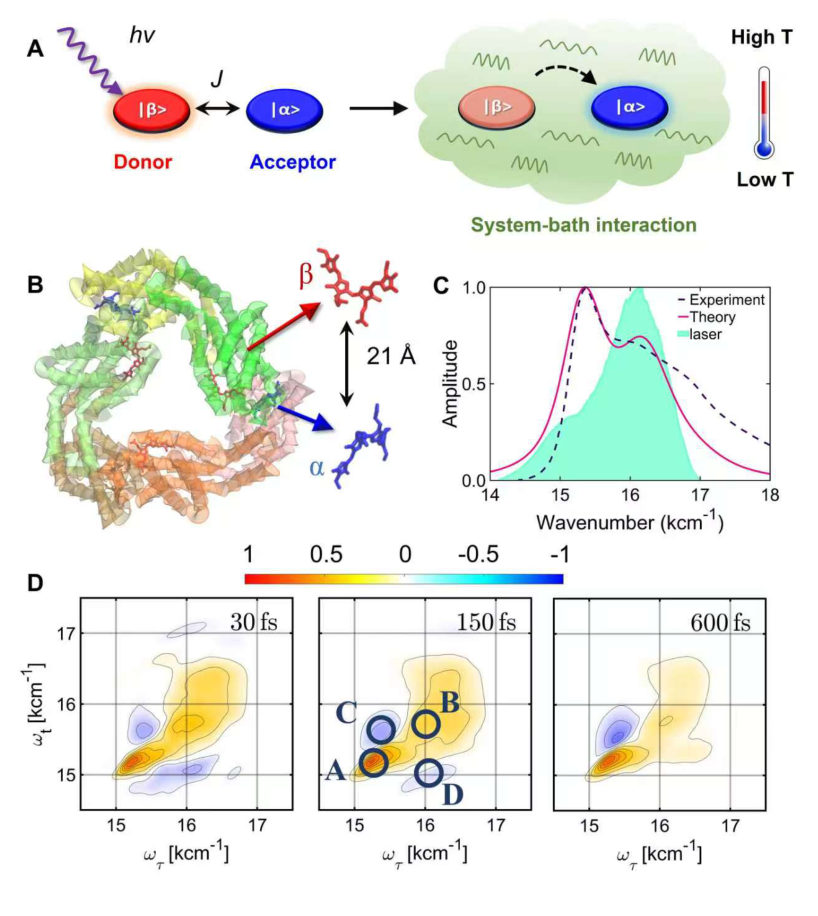
<figcaption class="paper-figure-caption"><b>Fig 1.</b> Figure 1: APC structure and temperature-dependent 2DES. (A) Conceptual illustration of</figcaption>
</figure>
<figure class="paper-figure-card">
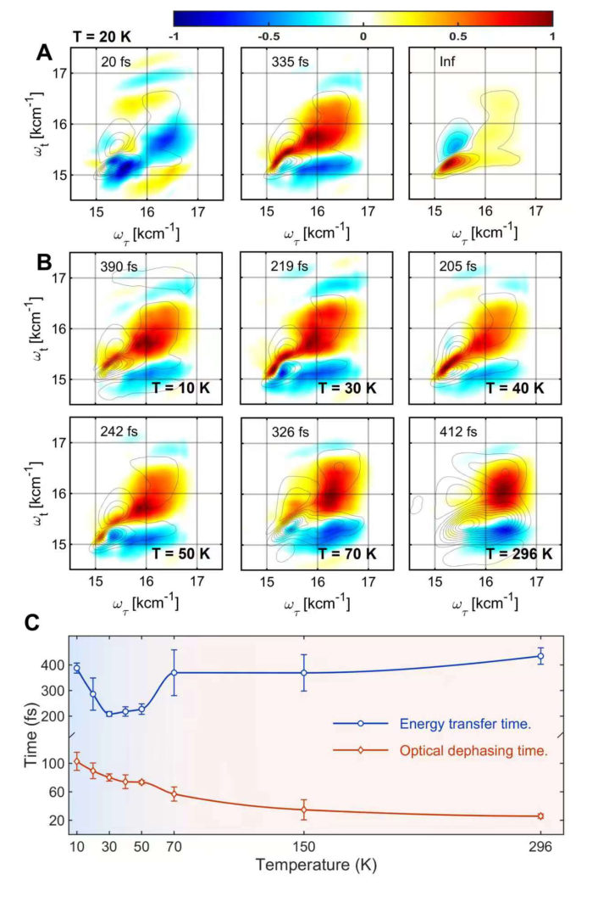
<figcaption class="paper-figure-caption"><b>Fig 2.</b> Figure 2: Temperature dependence of excitation-energy transfer. (A) Representative 2DDAS ob-</figcaption>
</figure>
<figure class="paper-figure-card">
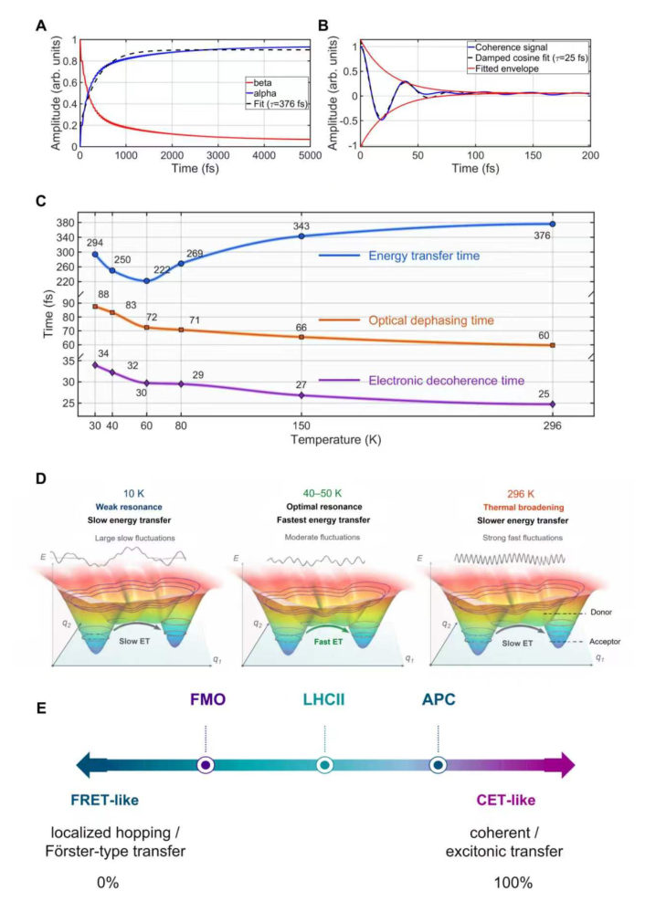
<figcaption class="paper-figure-caption"><b>Fig 3.</b> Figure 3: HEOM simulations identify the environmental origin of the transport turnover. (A)</figcaption>
</figure>
</div>

<p><strong>Summary.</strong> This work investigates energy transfer in the APC protein, finding that the transfer rate shows a complex, non-monotonic temperature dependence. This behavior cannot be explained by simple dephasing models, necessitating a detailed treatment of the environment's low-frequency spectral weight. The findings demonstrate that the specific frequency distribution of environmental coupling, not just the overall fluctuation strength, controls quantum energy transport efficiency.</p>
<p><strong>Why it may be interesting.</strong> It provides a detailed, quantitative example of how environmental spectral weight distribution, rather than just the magnitude of fluctuations, dictates quantum transport rates in complex biological systems, which is highly relevant to open quantum system dynamics.</p>
<details>
<summary>Detailed structure</summary>
<p><strong>Main problem.</strong> The study addresses how environmental fluctuations control excitation energy transfer in photosynthetic complexes, moving beyond simple models like incoherent hopping.</p>
<p><strong>Main result.</strong> The energy transfer time exhibits a non-monotonic temperature dependence (minimum near 30-40 K), which contrasts sharply with the monotonic decrease of the homogeneous optical dephasing time.</p>
<p><strong>Method.</strong> The research combines temperature-dependent 2DES measurements with advanced open-quantum system simulations using the Hierarchical Equations of Motion (HEOM).</p>
<p><strong>Model / system.</strong> The system is the Allophycocyanin (APC) protein, modeled as a vibronically coupled excitonic dimer interacting with a structured, temperature-dependent environment.</p>
<p><strong>Key observables.</strong> Energy transfer time ($eta 
ightarrow \alpha$), homogeneous optical dephasing time, and the environmental spectral density distribution.</p>
<p><strong>Important parameters / regimes.</strong> Temperature range (10 K to 296 K), electronic coupling strength ($J$), and the frequency distribution of environmental spectral weight.</p>
<p><strong>Assumptions / limitations.</strong> Conventional fixed-bath models fail; quantitative agreement requires allowing the low-frequency sector of the environmental spectral density to evolve anharmonically with temperature.</p>
<p><strong>Figures summary.</strong> Figures compare the non-monotonic energy transfer turnover against the monotonic dephasing decrease, illustrating that low-frequency environmental modes govern the transport efficiency.</p>
<p><strong>Paper structure.</strong> The paper establishes the physical problem using 2DES experiments across a wide temperature range, develops a detailed vibronic model, and uses HEOM simulations to reproduce the key non-monotonic temperature dependence, contrasting it with simpler dephasing metrics.</p>
</details>
<details>
<summary>Abstract</summary>
<p>Excitation-energy transfer underpins the conversion of light into usable energy in photosynthetic organisms and serves as a paradigm for evolutionary optimized transport in open quantum systems. Although this process is often described as incoherent thermally assisted hopping, such descriptions become inadequate when electronic coupling, vibronic interactions and environmental fluctuations occur on comparable energy scales. Determining how the environment controls transport therefore remains a fundamental challenge. Here, we use temperature-dependent 2DES to investigate energy transfer in the photosynthetic antenna protein allophycocyanin over the range 10 - 296 K. The dominant $β\rightarrow α$ transfer step exhibits a pronounced non-monotonic temperature dependence: the transfer time decreases from 400 fs at 10 K to 200 fs near 30- 40 K before increasing again to 400 fs at 296 K. In contrast, the homogeneous optical dephasing time decreases monotonically across the same temperature range. To interpret these observations, we model APC as a vibronically coupled excitonic dimer interacting with a structured environment and solve the dynamics using hierarchical equations of motion. Conventional fixed-bath models, including Drude-Lorentz and explicit intermolecular-mode spectral densities, fail to reproduce the observed turnover. Quantitative agreement is obtained only when the low-frequency sector of the environmental spectral density is allowed to anharmonically evolve strongly with temperature, while the high-frequency bath remains essentially unchanged. More broadly, these findings demonstrate that transport efficiency is controlled not simply by the magnitude of environmental fluctuations, but by the distribution of environmental spectral weight across frequency space, providing new experimental constraints on theories of molecular transport in complex quantum environments.</p>
</details>
<p><sub><a href="#top">↑ back to top</a></sub></p>

<p><a id="paper-2608.23533"></a></p>
<h3 id="non-abelian-spin-counting-of-ordered-stochastic-trajectories-reentrant-finite-time-chern-numbers"><a href="http://arxiv.org/abs/2608.23533v1">Non-Abelian Spin Counting of Ordered Stochastic Trajectories: Reentrant Finite-Time Chern Numbers</a></h3>
<p><strong>Authors:</strong> Yangyang Du<br>
<strong>Type:</strong> theory · <strong>Category:</strong> statistical mechanics · <strong>PDF:</strong> <a href="https://arxiv.org/pdf/2608.23533v1">https://arxiv.org/pdf/2608.23533v1</a><br>
<strong>Analysis basis:</strong> full PDF text, analyzed in chunks
<strong>Topic relevance:</strong> <code>Full counting statistics</code> <strong>3/5</strong> · <code>non-equilibrium universality</code> <strong>3/5</strong> · <code>driven-dissipative phase transition</code> <strong>2/5</strong> · <code>quantum measurements</code> <strong>2/5</strong> · <code>Keldysh / 2PI / non-Gaussian methods</code> <strong>1/5</strong> · <code>methods for driven-dissipative</code> <strong>1/5</strong></p>
<div class="figure-strip-hint">↔ Scroll figures horizontally</div>
<div class="paper-figures-scroll">
<figure class="paper-figure-card">
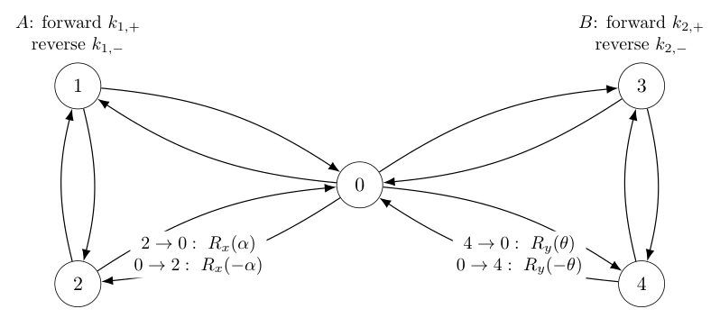
<figcaption class="paper-figure-caption"><b>Fig 1.</b> Figure 1: Two-loop Markov network and the counting gauge. On cycle A the forward orientation 0 →1 →2 →0 has rate k1,+ and the reverse orientation has rate k1,−; cycle B is defined analogously. The auxiliary spin rotates only on the two distinguished closing edges, with inverse rotations on reverse jumps. The counter is passive and does not modify the transition rates.</figcaption>
</figure>
<figure class="paper-figure-card">
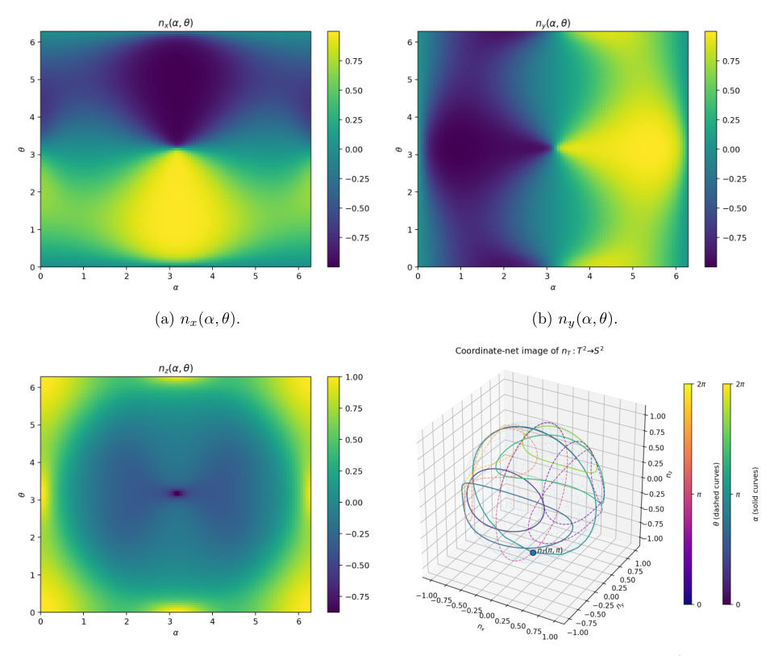
<figcaption class="paper-figure-caption"><b>Fig 2.</b> Figure 2: Normalized mean-spin texture at T = 4. The component plots display the parameter-space structure, while the coordinate-net plot shows how the counting torus folds over the target sphere. The strong deformation near (π, π) is associated with the small polarization norm there.</figcaption>
</figure>
<figure class="paper-figure-card">
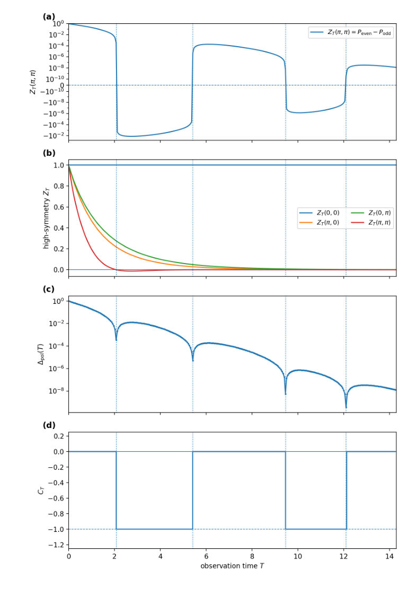
<figcaption class="paper-figure-caption"><b>Fig 3.</b> Figure 3: Finite-time topological phase scan and parity signature. (a) Joint-current parity observable ZT (π, π) = Peven −Podd on a symmetric logarithmic scale; dotted lines mark its four zero crossings. (b) The four high-symmetry polarizations. The first three remain positive, while ZT (π, π) changes sign four times. (c) Polarization gap ∆pol(T), which closes at the same four critical times. (d) Chern number obtained independently from spherical triangulation. At each critical time the eigenline bundle is undefined because the mean polarization vanishes. The one-to-one correspondence between the Chern transitions and Peven = Podd is therefore a symmetry-resolved parity signature of the...</figcaption>
</figure>
</div>

<p><strong>Summary.</strong> This paper develops a non-Abelian counting statistic to track the temporal ordering of events in stochastic processes, moving beyond the limitations of standard Full Counting Statistics. By mapping the ordered path ensemble to a complex line bundle, the authors calculate a Chern number ($C_T$) that quantifies this ordering. This shows that finite observation time can force a fixed process into distinct, topologically characterized sectors.</p>
<p><strong>Why it may be interesting.</strong> The connection between non-equilibrium stochastic processes, topological invariants (Chern numbers), and path ordering is highly relevant for understanding fluctuation theorems and non-equilibrium steady states in complex quantum or classical systems.</p>
<details>
<summary>Detailed structure</summary>
<p><strong>Main problem.</strong> To develop a counting statistic that captures the temporal ordering of stochastic events associated with different cycles, overcoming the limitation of conventional Full Counting Statistics (FCS) which only resolves net transport.</p>
<p><strong>Main result.</strong> The non-Abelian counting construction yields a Chern number ($C_T$) that is sensitive to the temporal ordering of paths, demonstrating a Chern–parity correspondence with ordinary current-parity statistics.</p>
<p><strong>Method.</strong> The authors introduce a non-Abelian counting construction using noncommuting rotations of an auxiliary spin, mapping the problem to calculating the Chern number of a complex line bundle over the counting torus.</p>
<p><strong>Model / system.</strong> The analysis is performed on a five-state nonequilibrium figure-eight network, modeled as a stochastic Markov process with oriented cycles A and B.</p>
<p><strong>Key observables.</strong> The Chern number ($C_T$), the mean spin $\mathbf{m}_T(\alpha, 	heta)$, and the parity observable $ ext{E}[(-1)^{Q_1+Q_2}]$ are key diagnostics.</p>
<p><strong>Important parameters / regimes.</strong> Observation time $T$, and the parameters defining the cycle affinities ($A_i$).</p>
<p><strong>Assumptions / limitations.</strong> The underlying dynamics are assumed to be classical and Markovian; the analysis relies on the existence of reflection symmetry to simplify the topological invariant calculation.</p>
<p><strong>Figures summary.</strong> Figure 1 illustrates the two-loop Markov network and the associated counting gauge, showing spin rotations on specific edges. The notes detail the reentrant sequence of $C_T$ when varying observation time.</p>
<p><strong>Paper structure.</strong> The paper progresses from identifying the failure of Abelian FCS to introducing the non-Abelian spin counting, deriving the topological invariant (Chern number), establishing the Chern–parity correspondence, and finally applying this to show time-dependent topological sectors in the path ensemble.</p>
</details>
<details>
<summary>Abstract</summary>
<p>Conventional full counting statistics assigns commuting phases to integrated stochastic currents and therefore resolves net transport but not, in general, the temporal ordering of events associated with different cycles. We introduce a non-Abelian counting construction in which crossings of two fundamental cycles rotate an auxiliary spin about different axes. The resulting ordered trajectory statistic has an exact finite-dimensional evolution equation for its first moment. The two rotation angles form a counting torus, and whenever the mean spin is nonzero its normalized direction defines a map $\mathbb T^2\to\mathbb S^2$, equivalently a complex eigenline bundle with a Chern number. Our main analytical result is a Chern--parity correspondence. Reflection symmetry equips this eigenline with a real structure and expresses $C_T\bmod2$ through first Stiefel--Whitney classes on the circles fixed by reflection. When the transverse polarization has no additional zeros along the reflection-fixed circles, these classes reduce to ordinary current-parity statistics at the four high-symmetry counting points. For a five-state nonequilibrium figure-eight network, varying only the observation time produces four polarization-gap closings and the reentrant sequence $C_T=0\to-1\to0\to-1\to0$. Every transition occurs at $(π,π)$ and coincides with a sign reversal of $\mathbb E[(-1)^{Q_1+Q_2}]$, while the full integer Chern number is obtained independently from the two-dimensional spin texture. Finite observation time can therefore organize a fixed stochastic process into distinct topological sectors of its ordered path ensemble.</p>
</details>
<p><sub><a href="#top">↑ back to top</a></sub></p>

<p><a id="paper-2608.21961"></a></p>
<h3 id="surface-code-quantum-error-correction-for-molecular-tweezer-arrays-encoding-layout-and-correlated-noise"><a href="http://arxiv.org/abs/2608.21961v1">Surface-Code Quantum Error Correction for Molecular Tweezer Arrays: Encoding, Layout, and Correlated Noise</a></h3>
<p><strong>Authors:</strong> Niharika Verma, Utpal Roy<br>
<strong>Type:</strong> theory · <strong>Category:</strong> quantum information and computing · <strong>PDF:</strong> <a href="https://arxiv.org/pdf/2608.21961v1">https://arxiv.org/pdf/2608.21961v1</a><br>
<strong>Analysis basis:</strong> full PDF text, analyzed in chunks
<strong>Topic relevance:</strong> <code>Rydberg arrays</code> <strong>3/5</strong> · <code>correlated / nonlocal dissipation</code> <strong>3/5</strong> · <code>QC/QI experiment</code> <strong>2/5</strong> · <code>analog quantum simulation</code> <strong>2/5</strong> · <code>methods for driven-dissipative</code> <strong>1/5</strong> · <code>quantum measurements</code> <strong>1/5</strong></p>
<div class="figure-strip-hint">↔ Scroll figures horizontally</div>
<div class="paper-figures-scroll">
<figure class="paper-figure-card">
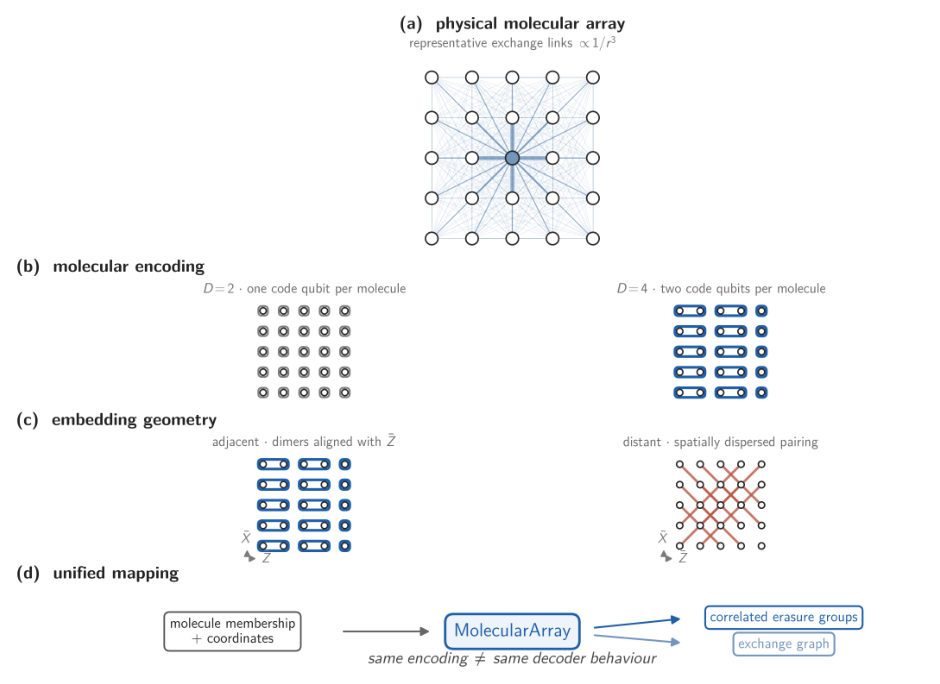
<figcaption class="paper-figure-caption"><b>Fig 1.</b> FIG. 1. Physical to code mapping for a molecular tweezer array hosting the data qubits of a rotated surface code, illustrated at d = 5. Circles denote code qubits at their lattice positions; all panels are generated directly from the layout object used in the simulations, so the constructions shown are the ones analysed in the text. (a) Molecular array with representative dipolar exchange links. The faint mesh marks nearest neighbour couplings and the heavier links radiate from a single central site, with line width proportional to |wij|, illustrating the 1/r3 falloff. Only these representative links are drawn; the full graph couples every pair of molecular sites. (b) The two molecular...</figcaption>
</figure>
<figure class="paper-figure-card">
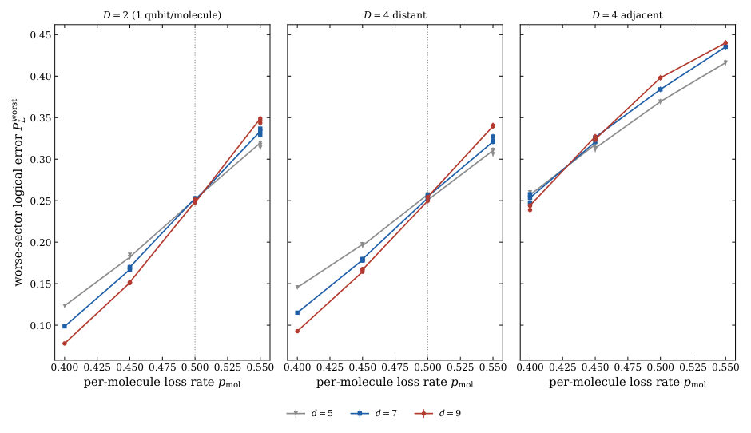
<figcaption class="paper-figure-caption"><b>Fig 2.</b> FIG. 2. Worse sector logical error rate against per molecule loss rate at d = 5, 7, 9, pooled over three independent runs of 2 × 104 shots per sector. The dotted line marks pmol = 0.50 and is drawn only in the two panels where the curves cross there. Error bars are binomial.</figcaption>
</figure>
<figure class="paper-figure-card">
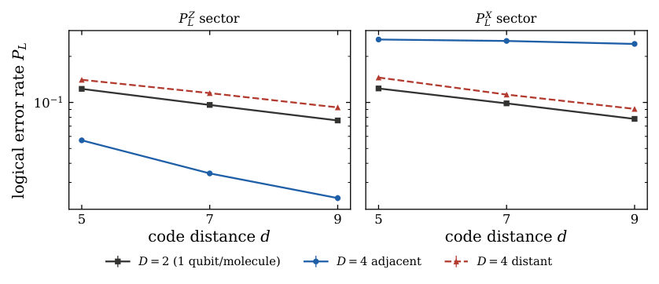
<figcaption class="paper-figure-caption"><b>Fig 3.</b> FIG. 3. Logical error rate against code distance at pmol = 0.40, resolved by logical sector, on a shared logarithmic axis (2 × 104</figcaption>
</figure>
<figure class="paper-figure-card">
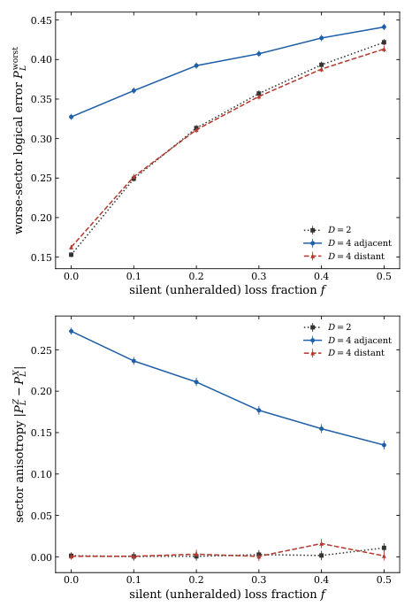
<figcaption class="paper-figure-caption"><b>Fig 4.</b> FIG. 4. Effect of unheralded loss at d = 9, pmol = 0.45 (1.5 × 104 shots per sector, single run per point). Top: worse sector logical error against silent fraction f. Bottom: sector anisotropy |P Z L −P X L | against f. In the lower panel the D = 2 and D = 4 distant curves overlap near zero.</figcaption>
</figure>
<figure class="paper-figure-card">
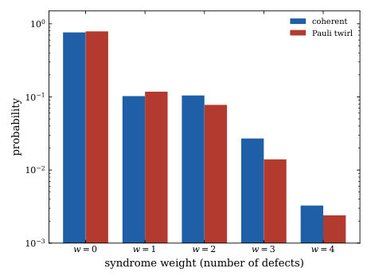
<figcaption class="paper-figure-caption"><b>Fig 5.</b> FIG. 6. Syndrome weight distribution at d = 3, θ = 0.12. The coherent arm places less probability on weight one, which fails with certainty at this distance, and more on weights two and higher, which fail with probability 0.07 and below. Condi- tional failure probabilities are Pfail = 1.00 at w = 1, 0.07 at w = 2, and 0 at w = 3, 4.</figcaption>
</figure>
</div>

<p><strong>Summary.</strong> This research analyzes quantum error correction on molecular tweezer arrays, demonstrating that the physical layout of the qubits is as critical as the encoding scheme itself. The authors show that spatial arrangement can induce significant directional biases in logical errors, necessitating the use of worst-case sector metrics for robust hardware design. The findings provide actionable design rules for building scalable, fault-tolerant quantum memories.</p>
<p><strong>Why it may be interesting.</strong> This work directly bridges the gap between physical hardware realization (molecular arrays) and abstract quantum error correction theory, providing concrete, structure-dependent guidelines for designing fault-tolerant quantum processors.</p>
<details>
<summary>Detailed structure</summary>
<p><strong>Main problem.</strong> The paper investigates how the physical structure of molecular tweezer arrays influences the performance of surface-code quantum error correction (QEC). It specifically compares different encoding strategies and the impact of spatial arrangement on error suppression.</p>
<p><strong>Main result.</strong> Spatially dispersed $D=4$ encodings can achieve comparable error thresholds to $D=2$ encodings while using significantly fewer molecules. Crucially, the spatial embedding structure, rather than just the encoding dimension, dictates whether logical errors exhibit directional asymmetry.</p>
<p><strong>Method.</strong> The authors constructed a mapping from the molecular array to a rotated surface code, simulating error rates under various noise models, including correlated molecular loss and coherent dipolar exchange.</p>
<p><strong>Model / system.</strong> The platform is polar molecules trapped in optical tweezer arrays, used to implement qubits for a surface code. The system is modeled by considering correlated erasures based on qubit sharing and dipolar exchange interactions ($w_{ij} \propto r^{-3}$).</p>
<p><strong>Key observables.</strong> Logical error rate ($P_L$), worst-case logical error ($P_{	ext{worst } L}$), and the degree of logical-sector asymmetry ($P_Z^L$ vs. $P_X^L$).</p>
<p><strong>Important parameters / regimes.</strong> Code distance ($d=5, 7, 9$), molecular loss rate ($p_{mol}$), and the encoding dimension ($D=2$ vs. $D=4$).</p>
<p><strong>Assumptions / limitations.</strong> The analysis is restricted to finite code distances, and the comparison of error rates is based on relative trends rather than asymptotic threshold determination.</p>
<p><strong>Figures summary.</strong> Figures illustrate the physical-to-code mapping, the dependence of $P_{	ext{worst } L}$ on $p_{mol}$ for different encodings, and the suppression of logical errors in favored versus disfavored logical sectors as distance increases.</p>
<p><strong>Paper structure.</strong> The paper progresses by first establishing the physical-to-code mapping, then comparing $D=2$ vs. $D=4$ encodings under correlated loss, followed by detailed analysis of how spatial embedding creates directional error asymmetries, and finally comparing different noise models (coherent vs. Pauli twirl) for the exchange interaction.</p>
</details>
<details>
<summary>Abstract</summary>
<p>Polar molecules trapped in optical tweezer arrays offer a promising platform for quantum information processing, providing precise control and long-range interactions that enable high-fidelity gate operations. We investigate quantum error correction in this system and show the influence of underlying physical noise. A mapping is constructed from a molecular tweezer array onto a rotated surface code in which a single specification of the array, namely, which code qubits share a molecule and where those molecules are located, determines both the correlated erasure structure and the dipolar exchange graph. We compare molecular encodings with rotational qudit dimensions (D), two and four under heralded molecular loss, coherent dipolar exchange, and imperfect heralding. It is found that a D= 4 encoding with spatially dispersed pairing exhibits a finite distance crossing at approximately the same per molecule loss rate as D= 2, while using 48-49 % fewer molecules, at the cost of a 6-10 % increase in sub-threshold logical error. Fixing the encoding and varying only the spatial embedding produces substantially larger effects: pairing the two co-located qubits along a lattice direction yields a logical-sector asymmetry of approximately fifty times. Over the simulated distances (d = 5, 7, 9), the disfavoured sector shows little or no suppression of logical error with increasing code distance, whereas the favoured sector improves by a factor of 1.5-2.3. We also find that Pauli twirl of the exchange interaction overestimates the logical error rate, which we attribute to the excitation-conserving structure of the interaction. These results reveal that the spatial embedding of correlated loss units is an important design parameter for molecular architectures and that single-sector benchmarks may be insufficient when correlated loss has directional structure.</p>
</details>
<p><sub><a href="#top">↑ back to top</a></sub></p>

<p><a id="paper-2608.22489"></a></p>
<h3 id="time-reversal-of-complex-evolution-on-a-quantum-computer"><a href="http://arxiv.org/abs/2608.22489v1">Time reversal of complex evolution on a quantum computer</a></h3>
<p><strong>Authors:</strong> Mahdi Kourehpaz, Dima L. Shepelyansky<br>
<strong>Type:</strong> theory · <strong>Category:</strong> statistical mechanics · <strong>PDF:</strong> <a href="https://arxiv.org/pdf/2608.22489v1">https://arxiv.org/pdf/2608.22489v1</a><br>
<strong>Analysis basis:</strong> full PDF text, analyzed in chunks
<strong>Topic relevance:</strong> <code>analog quantum simulation</code> <strong>3/5</strong> · <code>non-equilibrium universality</code> <strong>3/5</strong> · <code>scars &amp; prethermalization</code> <strong>3/5</strong> · <code>driven-dissipative phase transition</code> <strong>2/5</strong> · <code>quantum measurements</code> <strong>1/5</strong></p>
<div class="figure-strip-hint">↔ Scroll figures horizontally</div>
<div class="paper-figures-scroll">
<figure class="paper-figure-card">
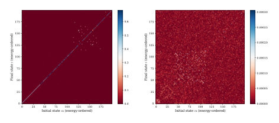
<figcaption class="paper-figure-caption"><b>Fig 1.</b> FIG. 2. Matrix of excited state Wim after tr = 30 perturba- tion periods at nq = 4 × 4, ε = 2, and h = 0.1 (left); h = 1 (right); only 200 initial register states with minimal energy E0 = H0 are shown; m/i is index of initial/excited register state.</figcaption>
</figure>
<figure class="paper-figure-card">
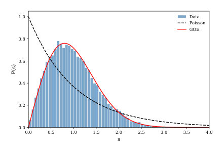
<figcaption class="paper-figure-caption"><b>Fig 2.</b> FIG. 1. Level spacing statistics of quasienergies λ of unitary operator U at parameters ε = 2, h = 1, nq = 4 × 4 = 16; it is obtained by diagonalizing all ten symmetry sectors sepa- rately, there are approximately 4.9 × 104 spacings. The Pois- son (dashed curve) and Wigner surmise of RMT (red solid curve) distributions are also shown.</figcaption>
</figure>
<figure class="paper-figure-card">
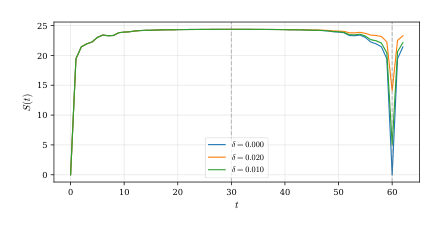
<figcaption class="paper-figure-caption"><b>Fig 3.</b> FIG. 5. Entropy Sq dependence on time t for the same system parameters as in Fig. 4.</figcaption>
</figure>
<figure class="paper-figure-card">
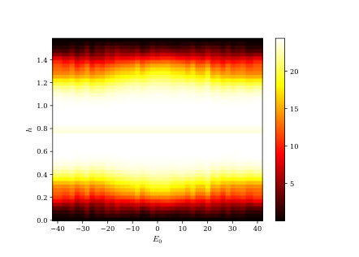
<figcaption class="paper-figure-caption"><b>Fig 4.</b> FIG. 3. Quantum register melting: color bar shows entropy values Sq after tr = 30 evolution periods in dependence on h and initial energy E0 = H0 for nq = 5 × 5 = 25 qubits, ε = 2, tr = 30, |ψ0⟩= | ↑↑↑. . . ↑⟩. Melting sets in above a threshold in h and is strongest in the high-density central band (E0 ≈0), invading the low-density band edges later; the horizontal dark stripes are the fidelity register preserving areas.</figcaption>
</figure>
<figure class="paper-figure-card">
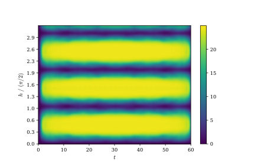
<figcaption class="paper-figure-caption"><b>Fig 5.</b> FIG. 6. Entropy Sq dependence on h and time t shown by color (color bar with Sq values); here ε = 2, nq = 5 × 5 = 25, |ψ0⟩= | ↑↑↑. . . ↑⟩, tr = 30 and no imperfections. The kick strength expressed as h/(π/2) (vertical). Bright (yellow) bands mark fast saturation to a large entropy; the dark horizontal stripes at h/(π/2) = 0, 1, 2, 3, are the register- preserving resonances where the kick is trivial up to a phase.</figcaption>
</figure>
</div>

<p><strong>Summary.</strong> This work proposes a quantum protocol to reverse complex, chaotic time evolution in a many-body qubit system, drawing a parallel to the historical Boltzmann-Loschmidt dispute. The protocol successfully restores the initial quantum state and entropy, demonstrating robustness against imperfections. Crucially, it highlights a 'butterfly effect' where local perturbations can destroy the global time-reversal symmetry.</p>
<p><strong>Why it may be interesting.</strong> It provides a concrete, physical realization of time reversal in a highly non-equilibrium, chaotic quantum many-body system, linking fundamental statistical mechanics debates to modern quantum computation feasibility.</p>
<details>
<summary>Detailed structure</summary>
<p><strong>Main problem.</strong> The paper addresses the problem of time reversal of thermalization, originally posed by the Boltzmann-Loschmidt dispute, within the modern context of quantum many-body systems.</p>
<p><strong>Main result.</strong> A quantum protocol was proposed that successfully reverses complex, chaotic evolution, showing the system's entropy returning to its initial low value, and this reversal is robust against minor quantum gate imperfections.</p>
<p><strong>Method.</strong> The time reversal is achieved by applying a time-reversed evolution operator ($U_r$) over a period equal to the initial evolution time, and its success is quantified using fidelity and entropy measurements.</p>
<p><strong>Model / system.</strong> The model is the Time Reversal Kicked Ising (TIRKI) model, simulating qubits on a square lattice with next-nearest static couplings and driven by a pulsed magnetic field.</p>
<p><strong>Key observables.</strong> Fidelity ($F(t)$), von Neumann entropy ($S_q$), and level spacing statistics of quasienergies ($\lambda$).</p>
<p><strong>Important parameters / regimes.</strong> Quantum chaotic regime (characterized by RMT level spacing), the time return period ($2t_r$), and the strength of static imperfections ($\delta$).</p>
<p><strong>Assumptions / limitations.</strong> The protocol assumes the system can be simulated by current quantum computers or annealers with hundreds of qubits, and the analysis relies on the system being in a chaotic regime.</p>
<p><strong>Figures summary.</strong> Figure 1 compares level spacing statistics to Poisson and GOE distributions, confirming quantum chaos. Later figures illustrate the fidelity decay and the 'butterfly effect' when a single qubit inversion breaks time reversibility.</p>
<p><strong>Paper structure.</strong> The paper first frames the classical Boltzmann-Loschmidt problem in quantum terms. It then details the TIRKI model and the time-reversal protocol using specific Hamiltonians and propagators. Key results are demonstrated by analyzing entropy growth, fidelity recovery, and the sensitivity to local perturbations (the butterfly effect).</p>
</details>
<details>
<summary>Abstract</summary>
<p>The Boltzmann-Loschmidt dispute in 1876-1877 discussed the problem of time reversal of ther- malization from time reversible classical equations of motion. Here, 150 years later, we highlight this problem in the frame of quantum computing. A quantum protocol is proposed that allows to perform a time reversal of complex evolution in the regime of many-body quantum chaos with many qubits. The system represents an evolution of qubits on a square lattice with inter-qubit next-nearest static couplings with a driven pulsed magnetic field. The system entropy grows rapidly to maximal values but returns to initial small values after time reversal. This time reversal is shown to be stable with respect to quantum gate imperfections. However, similar to the Lorenz butterfly effect, there is the butterfly effect of qubit when inversion of only one qubit breaks time reversibility of the whole system. It is argued that this protocol is accessible to nowadays quantum computers and annealers with hundreds of qubits.</p>
</details>
<p><sub><a href="#top">↑ back to top</a></sub></p>

<p><a id="paper-2608.22673"></a></p>
<h3 id="collective-self-sorting-on-a-chip"><a href="http://arxiv.org/abs/2608.22673v1">Collective self-sorting on a chip</a></h3>
<p><strong>Authors:</strong> Emanuel F. Teixeira, Thieu van den Bergh, Arjen Klok, Tijn Heesakkers, Alexandre Morin<br>
<strong>Type:</strong> both · <strong>Category:</strong> statistical mechanics · <strong>PDF:</strong> <a href="https://arxiv.org/pdf/2608.22673v1">https://arxiv.org/pdf/2608.22673v1</a><br>
<strong>Analysis basis:</strong> full PDF text, analyzed in chunks
<strong>Topic relevance:</strong> <code>driven-dissipative phase transition</code> <strong>3/5</strong> · <code>non-equilibrium universality</code> <strong>3/5</strong> · <code>analog quantum simulation</code> <strong>2/5</strong> · <code>Frenkel-Kontorova</code> <strong>1/5</strong> · <code>correlated / nonlocal dissipation</code> <strong>1/5</strong> · <code>methods for driven-dissipative</code> <strong>1/5</strong></p>
<div class="figure-strip-hint">↔ Scroll figures horizontally</div>
<div class="paper-figures-scroll">
<figure class="paper-figure-card">
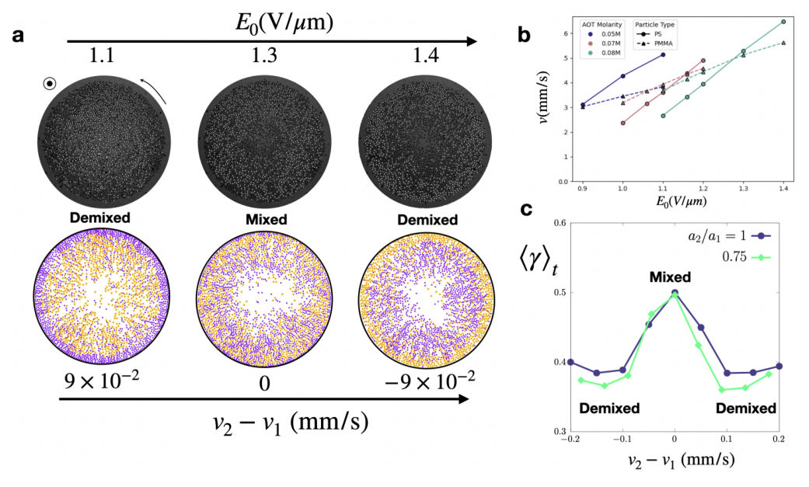
<figcaption class="paper-figure-caption"><b>Fig 1.</b> FIG. 1. Differential self-propulsion speed controls radial demixing. a Experimental observations (top) of binary Quincke-roller flocks confined in a circular well. Reversing the applied electric field switches the relative propulsion speeds of the two species and consequently inverts the demixing pattern: the faster species accumulates near the outer boundary, whereas the slower species is enriched toward the centre. Particle-based simulations (bottom) reproduce the experimentally observed radial organization, with faster particles preferentially occupying the outer region and slower particles accumulating in the inner region. b Self-propulsion speed as a function of the applied electric...</figcaption>
</figure>
<figure class="paper-figure-card">
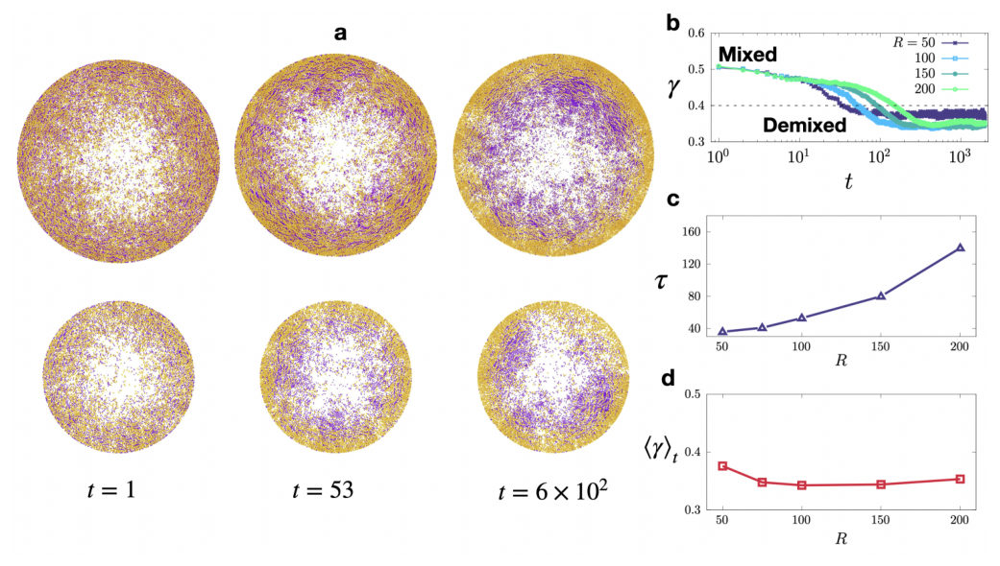
<figcaption class="paper-figure-caption"><b>Fig 2.</b> FIG. 2. Smaller confinements accelerate demixing without compromising separation purity. a Configurations of binary active particles confined in circular arenas of different radii, showing the steady-state radial organization of the two species. b Time evolution of the demixing parameter, γ, for different arena sizes. The characteristic demixing time, τ, is defined as the first time at which γ &lt; 0.4, corresponding to the emergence of a macroscopically demixed state with a well- defined radial organization. c Characteristic demixing time as a function of the arena radius. Demixing occurs more rapidly in smaller arenas because particles must reorganize over shorter distances to establish the...</figcaption>
</figure>
<figure class="paper-figure-card">
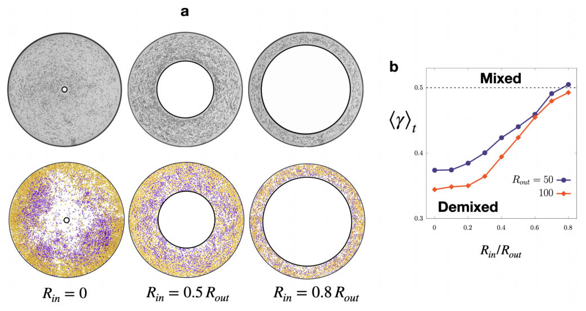
<figcaption class="paper-figure-caption"><b>Fig 3.</b> FIG. 3. From arena to circular channels. a. Experimental snapshots of a binary mixture confined in an annular channel for different values of Rin/Rout, showing the progressive loss of radial demixing as the inner radius increases. b. Corresponding simulation snapshots obtained under the same conditions, reproducing the transition from a demixed to a mixed state. c. Steady-state demixing parameter from numerical simulations, ⟨γ⟩t, as a function of Rin/Rout for experiments and simulations. Demixing decreases monotonically with increasing Rin/Rout, demonstrating that the relative curvature of the inner and outer boundaries controls the efficiency of radial segregation.</figcaption>
</figure>
<figure class="paper-figure-card">
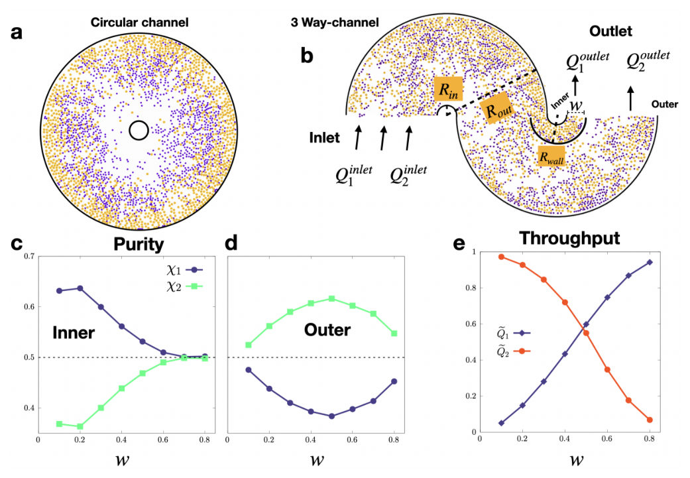
<figcaption class="paper-figure-caption"><b>Fig 4.</b> FIG. 4. From circular channels to continuous particle collection. a. Circular annular channel used to generate radial demixing between fast and slow particles. b. Three-way sorting geometry obtained by combining two shifted semicircular channels and introducing a separating wall that directs the demixed populations towards distinct inner and outer outlets. The wall position is parametrized by w = (Rwall −Rin)/(Rout −Rin). c. Steady-state particle fractions χin 1 and χin 2 at the inner outlet as a function of w. The purity of fast particles is maximal around w ≃0.2. d. Corresponding particle fractions χout 1 and χout 2 at the outer outlet, with maximal purity of slow particles around w ≃0.5....</figcaption>
</figure>
<figure class="paper-figure-card">
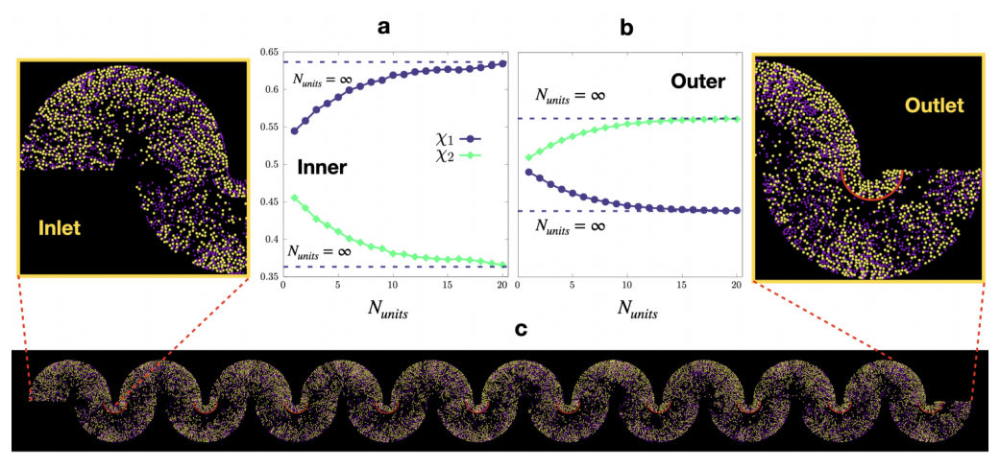
<figcaption class="paper-figure-caption"><b>Fig 5.</b> FIG. 5. From periodic sorting to a finite-size device. a. Steady-state particle fractions measured at the inner and outer outlets as a function of the number of three-way sorting units, (Nunits). Dashed lines indicate the corresponding values obtained in the infinite-channel limit. The inner-outlet composition converges after approximately (Nunits ≃20), whereas the outer outlet reaches its asymptotic value after about (Nunits ≃12). b. Schematic of the finite sorting device composed of successive three- way channel units, showing the progressive segregation of the two particle species along the channel. c. Reinjection boundary condition used to mimic continuous operation of a finite device....</figcaption>
</figure>
</div>

<p><strong>Summary.</strong> This work demonstrates how the inherent tendency of active particles to demix due to differences in self-propulsion speed can be engineered into a functional, continuous sorting device. By controlling the geometry of curved microfluidic channels, the authors successfully convert a microscopic active demixing process into a macroscopic, high-purity separation technique. This provides a powerful blueprint for autonomous microfluidic separation based on particle motility.</p>
<p><strong>Why it may be interesting.</strong> While the core physics is classical active matter, the principles of non-equilibrium phase separation, pattern formation, and directed transport in confined geometries are highly relevant to understanding energy dissipation and collective dynamics in quantum many-body systems or engineered quantum devices.</p>
<details>
<summary>Detailed structure</summary>
<p><strong>Main problem.</strong> The paper aims to develop a functional, continuous sorting strategy by harnessing collective active demixing in binary mixtures of self-propelled particles.</p>
<p><strong>Main result.</strong> By designing a sequence of curved microfluidic units, the initial mixed suspension progressively demixes, leading to strong, controllable enrichment of the two species at distinct collection regions.</p>
<p><strong>Method.</strong> The study combines particle-based molecular dynamics simulations with experimental measurements using Quincke-roller mixtures in microfluidic channels.</p>
<p><strong>Model / system.</strong> The system involves binary mixtures of active particles exhibiting differential self-propulsion speed and excluded-volume interactions, confined within geometries ranging from circular wells to complex, snake-like annular channels.</p>
<p><strong>Key observables.</strong> Spatial segregation patterns, demixing parameter ($\gamma$), normalized throughput ($   ilde{Q}_k$), and particle density fractions ($\chi_k$) at various downstream locations.</p>
<p><strong>Important parameters / regimes.</strong> Differential self-propulsion speed, confinement geometry (e.g., $R_{in}/R_{out}$ ratio, wall position $w$), and the number of sequential sorting units ($N_{units}$).</p>
<p><strong>Assumptions / limitations.</strong> The demixing mechanism is robust and can be controlled by geometry; the simulation models excluded-volume interactions and particle dynamics.</p>
<p><strong>Figures summary.</strong> Figures illustrate radial demixing in circular wells (Fig. 1a), the acceleration of demixing in smaller confinements (Fig. 2), the control of segregation by boundary geometry (Fig. 3), and the final realization in a snake-like channel showing progressive enrichment (Fig. 6).</p>
<p><strong>Paper structure.</strong> The paper progresses from establishing the fundamental mechanism of demixing using simple circular wells, to optimizing the geometry using annular channels and periodic boundary conditions, and finally demonstrating the scalability by constructing and testing a finite, continuous 'snake-like' sorting device.</p>
</details>
<details>
<summary>Abstract</summary>
<p>We harness two established ingredients for collective demixing: differential speed and curvature to create a self-sorting device. In binary mixtures, motility differences drive spontaneous spatial segregation, while confinement geometry determines how rapidly and strongly this demixing develops. Using particle based simulations, we systematically identify the geometrical conditions that promote efficient segregation and use these results to guide the design of a finite sorting architecture. We then translate these physical mechanisms into a sequence of curved microfluidic units that progressively amplify the separation of the two species and direct them toward distinct collection regions. Experiments with binary Quincke-roller mixtures confirm that an initially mixed suspension progressively demixes as it propagates through the device, leading to strong enrichment downstream. Our results demonstrate how collective active demixing can be converted into a functional continuous sorting strategy, providing a route toward autonomous microfluidic separation based on particle motility and confinement geometry.</p>
</details>
<p><sub><a href="#top">↑ back to top</a></sub></p>

<p><a id="paper-2608.22944"></a></p>
<h3 id="geometry-calibrated-equilibrium-sensing-for-inverse-design-of-nonlocal-topological-photonic-lattices"><a href="http://arxiv.org/abs/2608.22944v1">Geometry-calibrated equilibrium sensing for inverse design of nonlocal topological photonic lattices</a></h3>
<p><strong>Authors:</strong> Fatemeh Davoodi, Jeffrey McCord<br>
<strong>Type:</strong> both · <strong>Category:</strong> other · <strong>PDF:</strong> <a href="https://arxiv.org/pdf/2608.22944v1">https://arxiv.org/pdf/2608.22944v1</a><br>
<strong>Analysis basis:</strong> full PDF text, analyzed in chunks
<strong>Topic relevance:</strong> <code>analog quantum simulation</code> <strong>3/5</strong> · <code>correlated / nonlocal dissipation</code> <strong>2/5</strong> · <code>driven-dissipative phase transition</code> <strong>2/5</strong> · <code>methods for driven-dissipative</code> <strong>2/5</strong> · <code>interference shaping light</code> <strong>1/5</strong> · <code>quantum measurements</code> <strong>1/5</strong></p>
<div class="figure-strip-hint">↔ Scroll figures horizontally</div>
<div class="paper-figures-scroll">
<figure class="paper-figure-card">
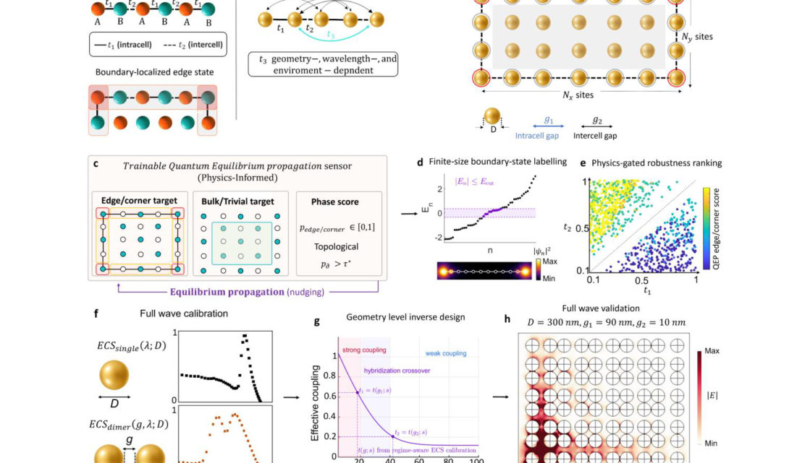
<figcaption class="paper-figure-caption"><b>Fig 1.</b> Fig. 1 | Geometry-calibrated equilibrium sensing for nonlocal topological design. a, Conceptual comparison between an ideal short-range SSH lattice and a realistic nonlocal plasmonic SSH lattice. In the ideal model, the response is governed by the nearest-neighbor intracell and intercell couplings 𝑡1 and 𝑡2. In the plasmonic system, the effective longer-range coupling 𝑡3 depends on particle geometry, wavelength and local electromagnetic environment, deforming the nearest-neighbor SSH phase structure. b, Finite two-dimensional plasmonic SSH lattice used for boundary sensing and inverse design. The structure is partitioned into corner, edge and bulk sectors. The particle diameter is denoted...</figcaption>
</figure>
<figure class="paper-figure-card">
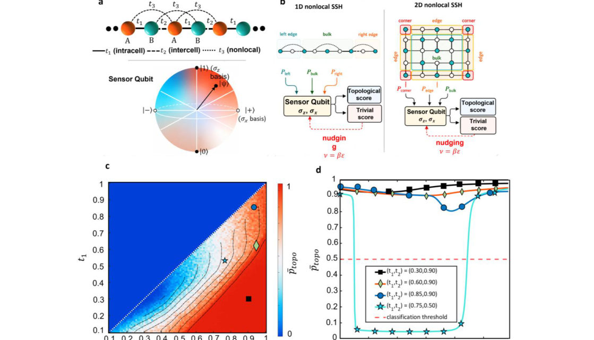
<figcaption class="paper-figure-caption"><b>Fig 2.</b> Fig. 2 | Equilibrium sensing of nonlocal boundary response. a, Nonlocal one-dimensional SSH lattice used as the controlled benchmark. The intracell and intercell couplings are denoted by 𝑡1 and 𝑡2, while 𝑡3 introduces a longer-range off-diagonal coupling that perturbs the nearest- neighbour SSH limit. The physical lattice is coupled to a sensor qubit whose equilibrium state is read out in the 𝜎𝑧 and 𝜎𝑥 bases. b, Spatially resolved QEP sensing scheme for one- and two-dimensional lattices. In the one-dimensional chain, the sensor couples separately to left- edge, bulk and right-edge sectors. In the finite two-dimensional lattice, the sensor resolves corner, edge and bulk regions, allowing the...</figcaption>
</figure>
<figure class="paper-figure-card">
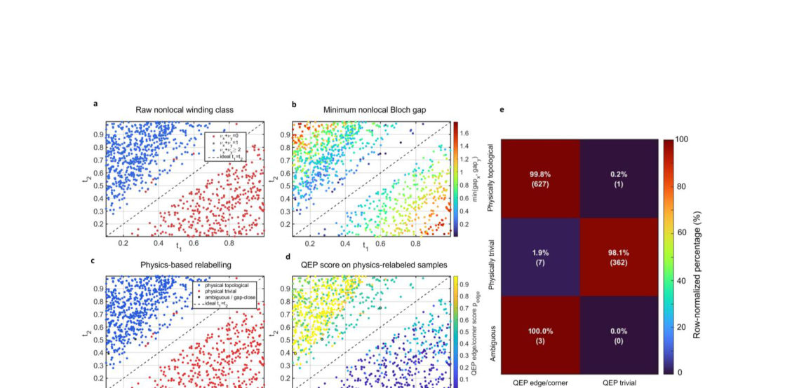
<figcaption class="paper-figure-caption"><b>Fig 3.</b> Fig. 3 | Physical relabeling of the QEP response in nonlocal coupling space. a, Raw nonlocal winding classification of sampled coupling configurations in the (𝑡1, 𝑡2) plane. b, Minimum nonlocal Bloch gap for the same samples, identifying configurations close to gap closure. c, Physics-based relabeling obtained by combining the directional winding condition with a finite-gap threshold. Samples are assigned as physically topological, physically trivial or gap-ambiguous. d, QEP edge- or corner-response score evaluated on the physically relabeled samples. e, Row-normalized confusion matrix comparing the trained QEP response assignment with the independently determined physical classes. The...</figcaption>
</figure>
<figure class="paper-figure-card">
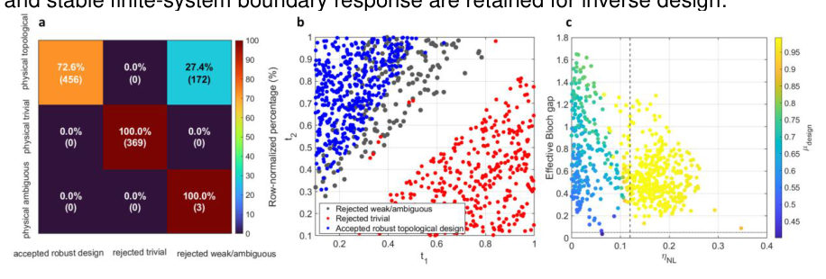
<figcaption class="paper-figure-caption"><b>Fig 4.</b> Fig 4 | Physics-gated robustness ranking after relabeling. a, Physics-gated design- decision matrix showing the final design decision after applying the topology gate and robustness ranking. Physically trivial and gap-ambiguous samples are rejected, while physically topological samples are separated into accepted robust designs and rejected weak or ambiguous candidates. b, Distribution of accepted and rejected configurations in the (𝑡1, 𝑡2) plane. c, Dependence of the final design reliability score (𝜇design) on the effective Bloch gap and the nonlocality measure 𝜂NL. The dashed line marks the reference nonlocality value used in the robustness score. Only configurations with verified...</figcaption>
</figure>
<figure class="paper-figure-card">
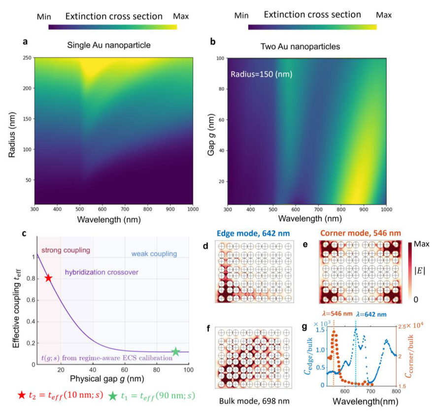
<figcaption class="paper-figure-caption"><b>Fig 5.</b> Fig. 5 | Full-wave geometry-to-coupling calibration and inverse-designed plasmonic lattice. a, Full-wave extinction response of an isolated gold nanoparticle as a function of wavelength and particle radius. The single-particle spectrum defines the geometry-dependent optical resonance of the building block. b, Extinction response of a gold nanoparticle dimer with particle radius s = 150 nm plotted as a function of wavelength and gap 𝑔. The spectral shifts, redistribution and splitting relative to the isolated-particle response arise from electromagnetic hybridization. c, Regime-aware geometry-to-coupling mapping for the selected particle radius and design wavelength. The normalized effective...</figcaption>
</figure>
</div>

<p><strong>Summary.</strong> This paper introduces a quantum equilibrium-propagation framework to enable the inverse design of nonlocal topological photonic lattices. It overcomes the limitations of nearest-neighbor models by incorporating full-wave electromagnetic interactions derived from plasmonic structures. The method rigorously verifies topological phases using winding numbers and identifies specific physical geometries that yield desired, strong boundary-localized optical responses.</p>
<p><strong>Why it may be interesting.</strong> This work is highly relevant as it provides a concrete, physics-informed methodology for designing quantum optical structures where interactions are not simple nearest-neighbor hopping, bridging quantum topology with applied electromagnetism.</p>
<details>
<summary>Detailed structure</summary>
<p><strong>Main problem.</strong> The paper addresses the challenge of inverse design for topological photonic lattices, moving beyond simplified nearest-neighbor models to incorporate realistic, long-range electromagnetic interactions.</p>
<p><strong>Main result.</strong> A novel framework was developed that successfully links realistic electromagnetic geometry (via full-wave simulation) to physically verified, nonlocal topological design, identifying specific geometries supporting distinct boundary responses.</p>
<p><strong>Method.</strong> The approach combines a geometry-calibrated quantum equilibrium-propagation (QEP) sensor with rigorous physical verification using nonlocal winding numbers and finite-gap criteria.</p>
<p><strong>Model / system.</strong> The system involves finite nonlocal plasmonic Su-Schrieffer-Heeger (SSH) lattices constructed from gold nanoparticles. The model incorporates long-range, geometry- and wavelength-dependent electromagnetic couplings.</p>
<p><strong>Key observables.</strong> Boundary-localized vs. trivial responses (measured by QEP sensor), nonlocal winding numbers, finite-gap criterion, and boundary-to-bulk intensity contrast.</p>
<p><strong>Important parameters / regimes.</strong> Wavelength ($\lambda$), particle size, separation gaps ($g_1, g_2$), and the nonlocality regime ($\eta_{	ext{NL}}$).</p>
<p><strong>Assumptions / limitations.</strong> The primary assumption is that the QEP sensor, when coupled with physical relabeling, can accurately map complex electromagnetic geometry to topological invariants and measurable boundary responses.</p>
<p><strong>Figures summary.</strong> Figures illustrate the framework components, including the comparison between ideal and nonlocal SSH models, the QEP sensor mapping, the necessity of physical relabeling using winding numbers, and the final mapping of geometry to distinct spectral responses.</p>
<p><strong>Paper structure.</strong> The paper introduces the problem (nonlocal interactions), develops the QEP sensing framework, implements a physics-gated relabeling procedure using winding numbers, calibrates the geometry-to-coupling relationship using full-wave simulations, and finally applies the inverse design to find target geometries.</p>
</details>
<details>
<summary>Abstract</summary>
<p>Topological photonic lattices are commonly designed using short-range Hamiltonians, yet realistic nanophotonic structures are governed by geometry- and wavelength-dependent long-range electromagnetic interactions. Here we introduce a geometry-calibrated quantum equilibrium-propagation framework for inference and inverse design in finite nonlocal plasmonic Su-Schrieffer-Heeger lattices. A two-qubit equilibrium sensor is trained in effective-coupling space to distinguish boundary-localized from trivial finite-lattice responses. Because labels inherited from the nearest-neighbor SSH model become unreliable in the presence of nonlocal hopping, each sample is independently relabeled using nonlocal winding numbers and a finite-gap criterion. On this physics-verified evaluation set, the sensor achieves 99.8% sensitivity and 98.1% specificity. A physics-gated robustness score then ranks verified configurations by boundary response, response contrast, gap stability and compatibility with the selected nonlocality regime. Full-wave extinction spectra of isolated and paired gold nanoparticles establish a geometry-to-coupling calibration linking particle size and separation to wavelength-resolved pair couplings. Projecting this calibration onto the verified coupling landscape identifies a finite plasmonic geometry supporting spectrally distinct corner- and edge-dominated responses at 546 and 642 nm, with sector-to-bulk intensity contrasts of $2.4 \times 10^{4}$ and $1.5 \times 10^{3}$, respectively. The framework links realistic electromagnetic geometry to nonlocal topological design, moving beyond nearest-neighbor design rules with physics-verified, geometry-resolved inference.</p>
</details>
<p><sub><a href="#top">↑ back to top</a></sub></p>

<p><a id="paper-2608.23426"></a></p>
<h3 id="inertial-synchronization-of-networked-oscillators-in-arbitrary-dimensions"><a href="http://arxiv.org/abs/2608.23426v1">Inertial synchronization of networked oscillators in arbitrary dimensions</a></h3>
<p><strong>Authors:</strong> Kirill Kovalenko, Bruce X. Dai, Fanshu Fang, Zerong Guo, Haoran Liu, Federico Botta, Charo I. del Genio, Stefano Boccaletti, Simona Olmi<br>
<strong>Type:</strong> theory · <strong>Category:</strong> disordered systems and neural networks · <strong>PDF:</strong> <a href="https://arxiv.org/pdf/2608.23426v1">https://arxiv.org/pdf/2608.23426v1</a><br>
<strong>Analysis basis:</strong> full PDF text, analyzed in chunks
<strong>Topic relevance:</strong> <code>analog quantum simulation</code> <strong>3/5</strong> · <code>driven-dissipative phase transition</code> <strong>2/5</strong> · <code>non-equilibrium universality</code> <strong>2/5</strong> · <code>Frenkel-Kontorova</code> <strong>1/5</strong> · <code>Keldysh / 2PI / non-Gaussian methods</code> <strong>1/5</strong> · <code>correlated / nonlocal dissipation</code> <strong>1/5</strong> · <code>methods for driven-dissipative</code> <strong>1/5</strong></p>
<div class="figure-strip-hint">↔ Scroll figures horizontally</div>
<div class="paper-figures-scroll">
<figure class="paper-figure-card">
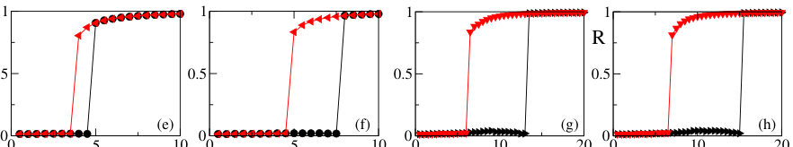
<figcaption class="paper-figure-caption"><b>Fig 1.</b> Figure 1. Change in order of the transition. The time average of the order parameter ⟨R⟩vs. the coupling strength λ shows that the transition is continuous for small enough values of m. As m or the number of dimensions D increase, a hysteresis loop appears. In all panels, the black dots indicate the results of forward simulations and the red ones those of backwards simulations, the dashed lines with corresponding colours are the theoretical predictions, and the simulations were carried out for N = 1000 oscillators, for Ts = 100 time units after a transient time Tt = 400, varying ∆λ = 0.5. Simulations were performed applying a Runge-Kutta 4th order integration scheme with integration step...</figcaption>
</figure>
<figure class="paper-figure-card">
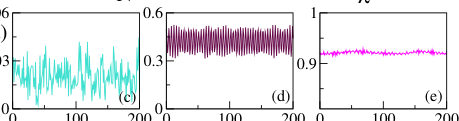
<figcaption class="paper-figure-caption"><b>Fig 2.</b> Figure 2. The high inertia regime. (a) The critical cou- pling λF c increases with system size, eventually reaching ap- proximately 5.5. Blue dots denote the mean values over dif- ferent realizations, which range from 100 for N = 1000 to 20 for N = 100000. (b) Time average of the order parameter ⟨R⟩ vs. the coupling strength λ. The black and red triangles refer to simulations performed by following protocols (I) and (II). The color code of the filled diamonds corresponds to the color of the time traces shown in panels (c)-(e), that identify the asynchronous state (turquoise), cluster state (maroon) and partial synchronization (magenta). (c)-(e) Time behavior of the order parameter R(t) for...</figcaption>
</figure>
<figure class="paper-figure-card">
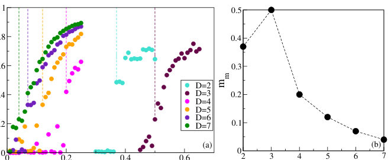
<figcaption class="paper-figure-caption"><b>Fig 3.</b> Figure 3. The inertia needed to generate a first-order transition decreases with the dimensions. (a) Difference between the order parameter values in the two transition directions (when positive for the first time) during the backwards transition. (b) Minimum value of the mass mm needed to observe a discontinuous transition as a function of D.</figcaption>
</figure>
<figure class="paper-figure-card">
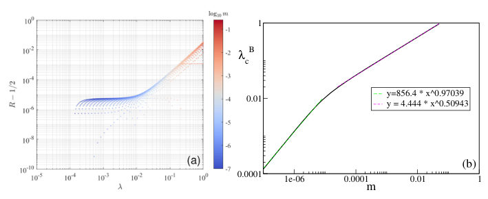
<figcaption class="paper-figure-caption"><b>Fig 4.</b> Figure 4. The low inertia regime: recovering the classic D-dimensional Kuramoto model. (a) For vanishing λ, the order parameter approaches R = 1 2 for small-enough masses. (b) The scaling exponent of the smallest coupling λB c for which partial synchronization is observed with the mass crosses over from approximately 0.5 to approximately 1 as the mass decreases.</figcaption>
</figure>
</div>

<p><strong>Summary.</strong> This work analyzes the inertial Kuramoto model in arbitrary dimensions to study collective synchronization. The key finding is that incorporating inertia fundamentally changes the synchronization transition, inducing hysteresis whose existence depends on the system's dimensionality and the magnitude of the inertia. This establishes inertia as a crucial control parameter for high-dimensional collective dynamics.</p>
<p><strong>Why it may be interesting.</strong> The study of collective dynamics, phase transitions, and emergent order parameters in high-dimensional systems is highly relevant to understanding complex quantum many-body systems and open quantum systems.</p>
<details>
<summary>Detailed structure</summary>
<p><strong>Main problem.</strong> The paper investigates the synchronization dynamics of networked oscillators in arbitrary dimensions, specifically focusing on the role of inertia.</p>
<p><strong>Main result.</strong> Inertia fundamentally alters the synchronization transition, causing a crossover from continuous to discontinuous behavior, with the onset of hysteresis depending explicitly on both inertia and dimensionality parity.</p>
<p><strong>Method.</strong> The analysis combines analytical theory, deriving self-consistent equations for the order parameter, with extensive numerical simulations.</p>
<p><strong>Model / system.</strong> The system is modeled by an inertial Kuramoto model in $D$ dimensions, where the dynamics are governed by a generalized equation involving the second time derivative of the oscillator vectors.</p>
<p><strong>Key observables.</strong> Order parameter ($R$), synchronization transition type (continuous vs. discontinuous), and the width of the hysteresis loop.</p>
<p><strong>Important parameters / regimes.</strong> Dimensionality ($D$), inertia ($m$), and coupling strength ($\lambda$).</p>
<p><strong>Assumptions / limitations.</strong> The analysis assumes the oscillator distribution is invariant under rotations around the mean order parameter ($ ilde{
ho}$).</p>
<p><strong>Figures summary.</strong> Figures illustrate the change in transition order (continuous vs. hysteretic) with inertia and dimension, and show the time evolution of the order parameter across different synchronization regimes.</p>
<p><strong>Paper structure.</strong> The paper develops the inertial Kuramoto model, derives mean-field equations, analyzes the transition points using stability criteria, and compares the resulting synchronization behavior across various dimensions and inertia regimes.</p>
</details>
<details>
<summary>Abstract</summary>
<p>The Kuramoto model provides a paradigmatic framework for studying synchronization of interacting oscillators, and has been generalized to arbitrary dimensions to describe swarms, flocks and multi-dimensional opinion dynamics. Yet, existing formulations neglect inertia, a key mechanism known to enhance information propagation and collective responsiveness. Here, we introduce and analyze an inertial Kuramoto model in arbitrary dimensions. We show that inertia fundamentally alters the nature of the synchronization transition, inducing a crossover from continuous to discontinuous behavior, with the onset of hysteresis depending explicitly on both inertia and dimensionality parity. Our analytical theory is supported by extensive numerical simulations. These results establish inertia as a crucial ingredient of high-dimensional collective dynamics and reveal a novel universal structure in synchronization phenomena.</p>
</details>
<p><sub><a href="#top">↑ back to top</a></sub></p>

<p><a id="paper-2608.22098"></a></p>
<h3 id="quantum-optomechanics-with-imperfect-mirrors-and-casimir-polder-effect-of-atoms-with-different-dynamic-polarizabilities-a-unified-treatment-via-a-microscopic-model"><a href="http://arxiv.org/abs/2608.22098v1">Quantum Optomechanics with Imperfect Mirrors and Casimir-Polder Effect of Atoms with Different Dynamic Polarizabilities: A Unified Treatment via a Microscopic Model</a></h3>
<p><strong>Authors:</strong> Bergen Dahl, Bei-Lok Hu<br>
<strong>Type:</strong> theory · <strong>Category:</strong> other · <strong>PDF:</strong> <a href="https://arxiv.org/pdf/2608.22098v1">https://arxiv.org/pdf/2608.22098v1</a><br>
<strong>Analysis basis:</strong> full PDF text, analyzed in chunks
<strong>Topic relevance:</strong> <code>Keldysh / 2PI / non-Gaussian methods</code> <strong>3/5</strong> · <code>methods for driven-dissipative</code> <strong>3/5</strong> · <code>Tavis-Cummings &amp; cavity-many-emitter</code> <strong>1/5</strong> · <code>analog quantum simulation</code> <strong>1/5</strong> · <code>correlated / nonlocal dissipation</code> <strong>1/5</strong> · <code>driven-dissipative phase transition</code> <strong>1/5</strong> · <code>quantum measurements</code> <strong>1/5</strong></p>
<div class="figure-strip-hint">↔ Scroll figures horizontally</div>
<div class="paper-figures-scroll">
<figure class="paper-figure-card">
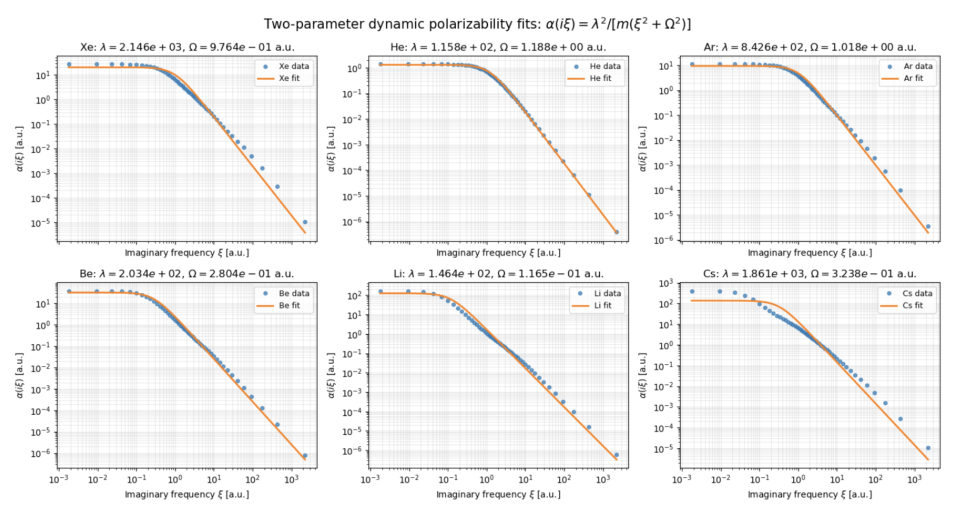
<figcaption class="paper-figure-caption"><b>Fig 1.</b> FIG. 1. Fits of the dynamic polarizabilities for Xe, He, Ar, Be, Li, and Cs to the tabulated data.</figcaption>
</figure>
<figure class="paper-figure-card">
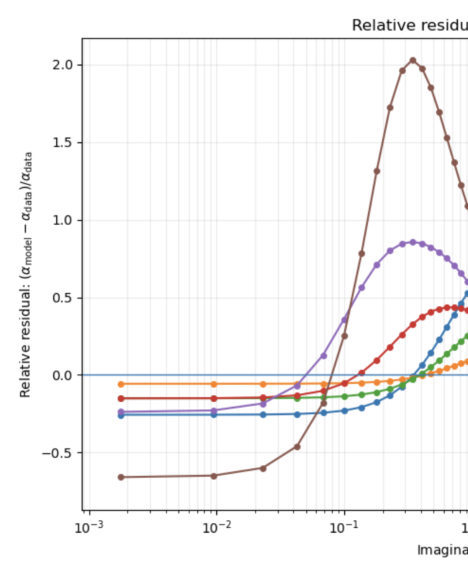
<figcaption class="paper-figure-caption"><b>Fig 2.</b> FIG. 2. Relative residuals of the dynamic polarizabilities for Xe, He, Ar, Be, Li, and Cs.</figcaption>
</figure>
<figure class="paper-figure-card">
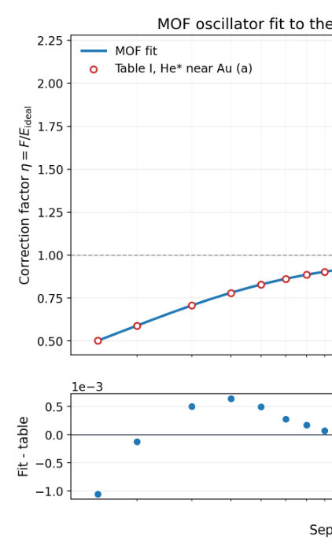
<figcaption class="paper-figure-caption"><b>Fig 3.</b> FIG. 3. Fit of the correction factor as a function of distance to the data of Ref. [23].</figcaption>
</figure>
</div>

<p><strong>Summary.</strong> This paper develops the Atom/Mirror-Oscillator-Field (AMOF) model, a microscopic theory for quantum optomechanics. It demonstrates the model's versatility by successfully calculating phenomena ranging from cavity field interactions with imperfect mirrors to the Casimir-Polder force between atoms and surfaces. The key contribution is showing that a single, unified microscopic framework can accurately describe diverse quantum optical and material physics problems.</p>
<p><strong>Why it may be interesting.</strong> This work is highly relevant as it provides a rigorous, first-principles framework (microscopic dynamics) to calculate phenomena in open quantum systems, bridging the gap between idealized theoretical models and complex, real-world experimental setups in quantum optics and AMO.</p>
<details>
<summary>Detailed structure</summary>
<p><strong>Main problem.</strong> The work aims to create a unified, microscopic model for quantum optomechanics (QOM) that accurately describes interactions involving imperfect mirrors and atoms with complex dynamic polarizabilities.</p>
<p><strong>Main result.</strong> The proposed Atom/Mirror-Oscillator-Field (AMOF) model successfully reproduces established results for both cavity optomechanics (e.g., particle creation) and the Casimir-Polder force, showing excellent agreement with real material data.</p>
<p><strong>Method.</strong> The authors employ a microscopic Hamiltonian approach, integrating out the internal oscillator degrees of freedom to derive effective field theories for calculating observables like transmission functions and free energy.</p>
<p><strong>Model / system.</strong> The core is the AMOF model, which extends the MOF model by incorporating an internal degree of freedom (idf) for atoms or mirrors. This model describes the interaction between a quantum field ($\Phi$) and the mechanical/internal oscillator modes, allowing for a unified treatment of different physical boundaries.</p>
<p><strong>Key observables.</strong> Transmission/reflection functions ($R(\omega), T(\omega)$), quantum fluctuations (particle number $N_{	ext{out}}(\omega)$), and the Casimir-Polder free energy ($F_A$).</p>
<p><strong>Important parameters / regimes.</strong> The three intrinsic constituent parameters of the idf oscillator ($\lambda, m, \Omega$), and material properties like plasma frequencies or coupling strengths.</p>
<p><strong>Assumptions / limitations.</strong> The analysis often relies on approximations such as the small displacement limit for mirrors and the dilute atomic limit for the Casimir-Polder calculation.</p>
<p><strong>Figures summary.</strong> Not specified in the notes, but the structure implies comparisons between AMOF predictions and established boundary condition methods or experimental data fits.</p>
<p><strong>Paper structure.</strong> The paper systematically tackles three related problems: 1) Imperfect mirrors in a cavity field, 2) Fitting the model's dynamic polarizability to tabulated data, and 3) Combining these to analyze the quantum-fluctuation-induced Casimir-Polder energy.</p>
</details>
<details>
<summary>Abstract</summary>
<p>This work aims at bringing the microphysics model of quantum optomechanics (QOM) proposed in [1] and developed in [2, 3] one step closer to be applicable to realistic experimental conditions, specifically, for imperfect mirrors, and for real materials. The atom/mirror-oscillator-field (AMOF) model features an internal degree of freedom for a mirror or an atom whose interaction with a quantum field determines the transmission functions of a mirror or the dynamic polarizability of an atom. We study three problems with this model: 1) An imperfect mirror moving in a cavity field, comparing results from the AMOF model with the boundary condition methods; 2) We analyze how well the dynamic polarizability derived from the AMOF model fits the tabulated data at different frequencies. 3) Combining these two parts we analyze the quantum fluctuations induced Casimir-Polder energy between a dilute atom space and a wall. We examine how well we can use the three constituent parameters of the idf oscillator in the AMOF model to match with published results on a meta-stable He* atom near a Au plate and found excellent agreements. These examples show that the AMOF model not only has a sound theoretical structure, because it is based on the microphysics dynamics of the basic constituents, it also has good practical values because it can produce accurate results for certain real materials.</p>
</details>
<p><sub><a href="#top">↑ back to top</a></sub></p>

<p><a id="paper-2608.23516"></a></p>
<h3 id="extreme-ultraviolet-spectroscopy-using-quantum-logic-a-feasibility-study-for-singly-ionized-helium"><a href="http://arxiv.org/abs/2608.23516v1">Extreme-ultraviolet spectroscopy using quantum logic: a feasibility study for singly-ionized helium</a></h3>
<p><strong>Authors:</strong> A. Martínez de Velasco, V. P. J. Barbé, E. L. Gründeman, A. Díaz Calderon, M. Collombon, J. J. Krauth, C. F. Roth, M. Favier, R. Taieb, T. E. Mehlstäubler, P. O. Schmidt, L. S. Dreissen, K. S. E. Eikema<br>
<strong>Type:</strong> both · <strong>Category:</strong> other · <strong>PDF:</strong> <a href="https://arxiv.org/pdf/2608.23516v1">https://arxiv.org/pdf/2608.23516v1</a><br>
<strong>Analysis basis:</strong> full PDF text, analyzed in chunks
<strong>Topic relevance:</strong> <code>QC/QI experiment</code> <strong>3/5</strong> · <code>quantum measurements</code> <strong>3/5</strong> · <code>quantum optics experiment</code> <strong>3/5</strong> · <code>interference shaping light</code> <strong>1/5</strong></p>
<div class="figure-strip-hint">↔ Scroll figures horizontally</div>
<div class="paper-figures-scroll">
<figure class="paper-figure-card">
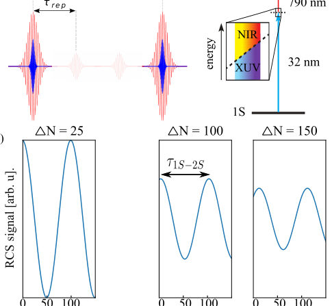
<figcaption class="paper-figure-caption"><b>Fig 1.</b> FIG. 1. Depiction of Ramsey-comb spectroscopy of the 1S − 2S transition in He+. a) Pairs of phase-coherent, two-color 790 nm NIR (red) + 32 nm XUV (blue) pulses derived from a FC and separated in time by multiples of the FC repetition period τrep are used to perform a series of individual Ramsey- type measurements. The 32 nm light is the 25th harmonic of the NIR fundamental and is generated by HHG in a gas jet. b) The 40.81 eV energy gap of the 2-photon 1S−2S transition in He+ is bridged by a 790 nm photon and its 25th harmonic in the XUV at 32 nm. Inset: Different wavelength combinations within the bandwidths of the NIR and XUV pulses match the 1S −2S energy gap and their contributions...</figcaption>
</figure>
<figure class="paper-figure-card">
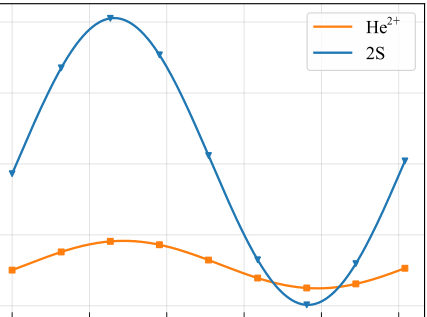
<figcaption class="paper-figure-caption"><b>Fig 2.</b> FIG. 2. Simulated RCS fringes for 1S −2S excitation of He+, for a free and static He+ ion at a macrodelay of 600 fs (chosen for computational convenience). Solid lines are sinusoidal fits to the simulated data. For a NIR intensity of 4×1013 W/cm2</figcaption>
</figure>
<figure class="paper-figure-card">
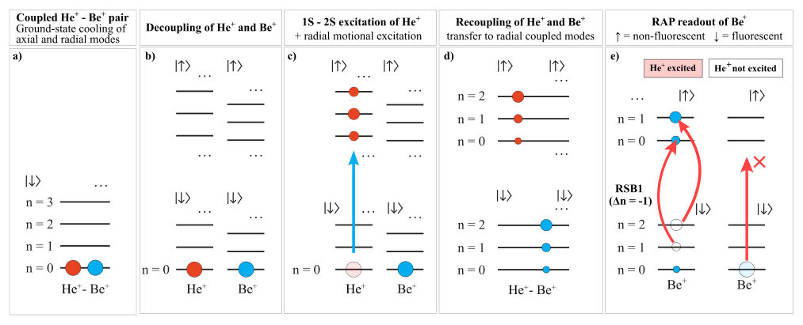
<figcaption class="paper-figure-caption"><b>Fig 3.</b> FIG. 3. Quantum logic-type detection scheme based on single He+ and Be+ ions co-trapped in a linear Paul trap. For He+, |↓⟩= |1S⟩and |↑⟩= |2S⟩. For Be+, |↓⟩= 2S1/2 |F = 2, mf = 2⟩and |↑⟩= 2S1/2 |F = 1, mf = 1⟩. a) The coupled motional modes of He+ with Be+ are cooled to the ground state with both ions in their electronic ground state. b) The ions are radially motionally decoupled by relaxing the ion trap axial potential. c) Excitation of He+ to the electronic excited state |↑⟩by XUV radiation is accompanied by a large momentum transfer which promotes the He+ ion to a coherent motional state with average motional quanta ¯n = 11 distributed among its radial motional modes; The Be+ remains in...</figcaption>
</figure>
<figure class="paper-figure-card">
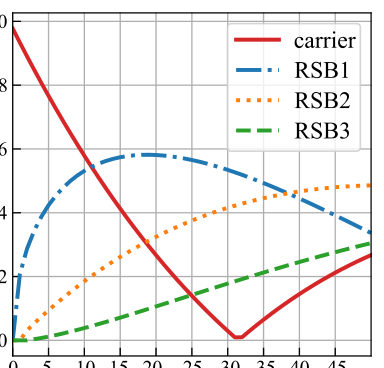
<figcaption class="paper-figure-caption"><b>Fig 4.</b> FIG. 4. Normalized Rabi frequency for carrier (solid red), first- (dash-dotted blue), second- (dotted orange), and third- order (dashed purple) red sidebands for a Lamb-Dicke param- eter of η = 0.2.</figcaption>
</figure>
<figure class="paper-figure-card">
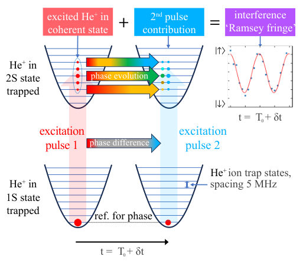
<figcaption class="paper-figure-caption"><b>Fig 5.</b> FIG. 5. Schematic depiction of RCS of He+ in an ion trap. The He+ ion is decoupled from the Be+ ion and initially in the motional and electronic ground state (see part b of Fig. 3). The first RCS pulse, depicted as the light red vertical arrow, creates a superposition of the ground electronic and excited state. The electronic excited state features several occupied motional levels. The phase of the excited state wavefunction evolves as ϕk(t) = ωtrt + ωsec,kt. Each motional level evolves at its own frequency ωsec,k = k × ωsec, where ωsec is the ion secular frequency and k indexes the motional level. At a later time t the second excitation pulse, depicted as the light blue vertical arrow,...</figcaption>
</figure>
</div>

<p><strong>Summary.</strong> This paper presents a feasibility study for using Quantum Logic spectroscopy combined with Ramsey-Comb techniques to measure the $1S-2S$ transition in $   ext{He}^+$ in the XUV range. By addressing technical challenges like Doppler broadening and phase noise, the authors demonstrate that high precision spectroscopy, crucial for testing QED, is achievable with trapped ions and high-harmonic generation sources.</p>
<p><strong>Why it may be interesting.</strong> This work represents a state-of-the-art integration of several advanced quantum optics techniques—trapped ions, XUV combs, and quantum control—to push the boundaries of fundamental constant measurements.</p>
<details>
<summary>Detailed structure</summary>
<p><strong>Main problem.</strong> The paper addresses the challenge of performing high-precision spectroscopy in the Extreme-Ultraviolet (XUV) range, specifically targeting the $1S-2S$ transition in singly-ionized helium ($ ext{He}^+$).</p>
<p><strong>Main result.</strong> The authors show that achieving spectroscopic precision at the $10 	ext{ kHz}$ level is feasible using their proposed method, enabling improved tests of Quantum Electrodynamics (QED) or precise measurements of fundamental constants.</p>
<p><strong>Method.</strong> They propose a novel Quantum Logic (QL) spectroscopy method combined with Ramsey-Comb Spectroscopy (RCS) to interrogate the weak XUV transition.</p>
<p><strong>Model / system.</strong> The experiment uses a single $  ext{He}^+$ ion co-trapped with a $  ext{Be}^+$ ion in a Paul trap. Excitation is achieved by upconverting frequency-comb (FC) laser pulses to the XUV via High-Harmonic Generation (HHG).</p>
<p><strong>Key observables.</strong> The primary observable is the population oscillation of the $2S$ state, measured via a nondestructive QL readout scheme.</p>
<p><strong>Important parameters / regimes.</strong> The target transition is the $1S-2S$ transition at $40.81 	ext{ eV}$; the required precision is $10^{-12}$ fractional uncertainty.</p>
<p><strong>Assumptions / limitations.</strong> Key assumptions include using an optical cavity to filter FC pulses for phase coherence and modeling motional dynamics outside the Lamb-Dicke regime.</p>
<p><strong>Figures summary.</strong> Figure 1 depicts the Ramsey-comb spectroscopy setup using two-color NIR and XUV pulses, while Figure 2 shows simulated RCS fringes illustrating the population dynamics of the $2S$ state.</p>
<p><strong>Paper structure.</strong> The paper introduces the need for XUV spectroscopy, proposes the QL-RCS scheme for $   ext{He}^+$, details the technical solutions for Doppler/recoil cancellation and phase coherence, and concludes with the feasibility demonstration for high-precision measurements.</p>
</details>
<details>
<summary>Abstract</summary>
<p>Extreme-ultraviolet (XUV) spectroscopy represents an important new direction in precision physics, with potential applications ranging from the metrology of fundamental constants to tests of physics beyond the Standard Model. However, the application of quantum control methods for precision spectroscopy remains an open challenge in the XUV range. Here we present a novel quantum logic (QL) spectroscopy method for precision spectroscopy of weak XUV transitions, and numerically validate its feasibility for the $1S-2S$ transition at 40.81\,eV in singly-ionized helium (He$^{+}$). We propose a scheme based on a single He$^{+}$ ion co-trapped with a Be$^{+}$ ion in a Paul trap, and He$^{+}$ excitation with pairs of frequency-comb (FC) laser pulses upconverted to the XUV via High-Harmonic Generation (HHG). We investigate a nondestructive QL scheme to detect $1S-2S$ excitation, and compare its performance with a destructive readout based on state-selective ionization. Phase coherence of the XUV light is modelled and an optical cavity is used to filter the FC pulses prior to HHG. We model the motional excitation dynamics of trapped ions outside the Lamb-Dicke regime, and numerically validate a scheme we proposed in \cite{Grundeman} to cancel the first-order Doppler broadening and the recoil shift by synchronizing the ion's secular period with the time delay between the two excitation pulses. We show that precision spectroscopy of the $1S-2S$ transition in He$^{+}$ at the 10 kHz level is feasible, for improved tests of quantum electrodynamics (QED), a measurement of the Rydberg constant $R_{\infty}$ independent of hydrogen measurements, or an improved determination of the alpha particle and helion charge radii. The proposed method may also be applied to XUV spectroscopy of other ions outside the Lamb-Dicke regime.</p>
</details>
<p><sub><a href="#top">↑ back to top</a></sub></p>

<p><a id="paper-2608.23561"></a></p>
<h3 id="flux-induced-aharonov-bohm-oscillation-in-the-tunneling-spectroscopy-of-kitaev-spin-liquids"><a href="http://arxiv.org/abs/2608.23561v1">Flux-induced Aharonov-Bohm Oscillation in the Tunneling Spectroscopy of Kitaev Spin Liquids</a></h3>
<p><strong>Authors:</strong> Wen-Han Kao, Elio J. König<br>
<strong>Type:</strong> both · <strong>Category:</strong> strongly correlated electrons · <strong>PDF:</strong> <a href="https://arxiv.org/pdf/2608.23561v1">https://arxiv.org/pdf/2608.23561v1</a><br>
<strong>Analysis basis:</strong> full PDF text, analyzed in chunks
<strong>Topic relevance:</strong> <code>analog quantum simulation</code> <strong>3/5</strong> · <code>interference shaping light</code> <strong>3/5</strong> · <code>quantum measurements</code> <strong>2/5</strong> · <code>Keldysh / 2PI / non-Gaussian methods</code> <strong>1/5</strong> · <code>methods for driven-dissipative</code> <strong>1/5</strong></p>
<div class="figure-strip-hint">↔ Scroll figures horizontally</div>
<div class="paper-figures-scroll">
<figure class="paper-figure-card">
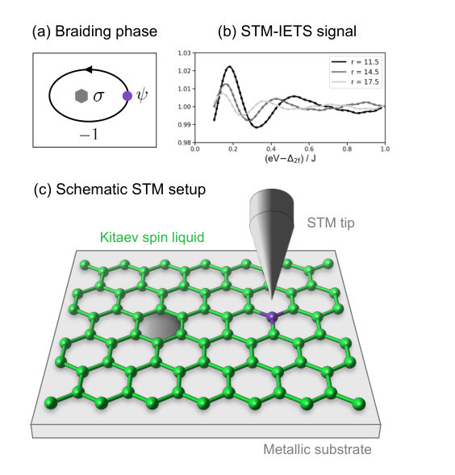
<figcaption class="paper-figure-caption"><b>Fig 1.</b> FIG. 1. Proposed scanning tunneling microscopy (STM) setup for probing the Ising anyon braiding effect from an isolated 𝜋-flux ex- citation. (a) The full braiding phase from a fermion encircling an isolated 𝜋-flux excitation. (b) The proposed tunneling signal as a function of the bias voltage 𝑒𝑉(subtracted by the two-flux gap Δ2 𝑓), in units of the Kitaev coupling 𝐽. Different curves represent the dif- ferent measuring positions with a horizontal distance 𝑟in units of the lattice constant from the 𝜋-flux plaquette. (c) The schematic STM setup, where the tip is on top of one lattice site (highlighted in pur- ple) in the Kitaev spin-liquid layer. The isolated 𝜋-flux excitation is depicted as...</figcaption>
</figure>
<figure class="paper-figure-card">
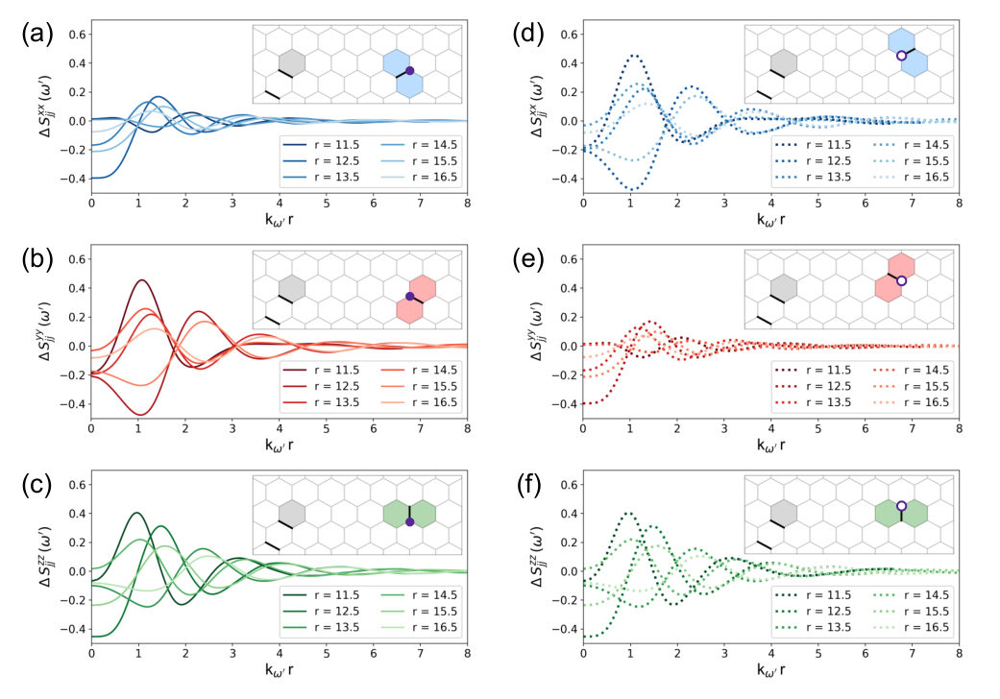
<figcaption class="paper-figure-caption"><b>Fig 2.</b> FIG. 2. Different components of the flux-contrasted dynamical spin correlation function for (a)-(c) the A sublattice sites and (d)-(f) the B sublattice sites. On the horizontal axis, we define 𝑘𝜔′ = √︁</figcaption>
</figure>
<figure class="paper-figure-card">
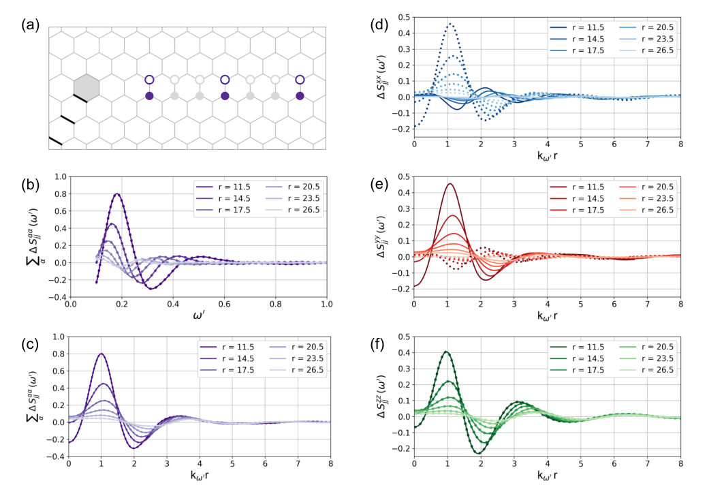
<figcaption class="paper-figure-caption"><b>Fig 3.</b> FIG. 3. STM-IETS signals at measurement sites separated by three unit cells. (a) The setup for the measuring sites. Instead of measuring every site along the radial direction (Δ𝑟= 1), we select sites separated by Δ𝑟= 3 to remove the relative intervalley phase in the oscillation. (b)-(c) Aharonov-Bohm oscillations in the STM-IETS signal as a function of frequency or 𝑘𝜔′𝑟. Note that we shift the frequency with the two-flux gap Δ2 𝑓to show the alignment of the peaks. (d)-(f) Three components of the STM-IETS signals under the same Δ𝑟= 3 selection.</figcaption>
</figure>
<figure class="paper-figure-card">
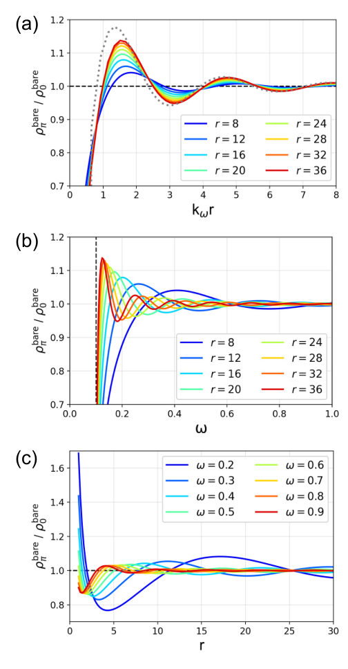
<figcaption class="paper-figure-caption"><b>Fig 4.</b> FIG. 4. The bare LDOS of the continuum model in the presence of a 𝜋flux, calculated by Eq. (26). The linear LDOS is defined as a back- ground reference 𝜌bare 0 . In (a), each curve is evaluated at fixed 𝑟and 𝑘𝜔= √</figcaption>
</figure>
<figure class="paper-figure-card">
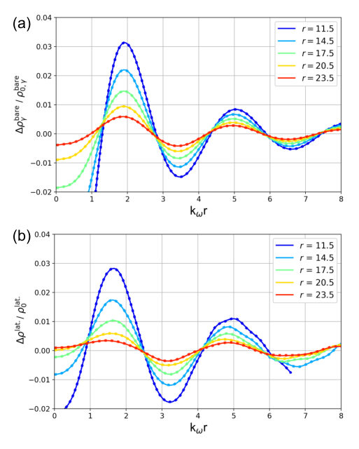
<figcaption class="paper-figure-caption"><b>Fig 5.</b> FIG. 5. The flux-contrasted LDOS for (a) the continuum model, and (b) the lattice model (𝐿= 122) without the flux-pair insertion. The continuum model result is calculated by Eq. (35) and normalized by 𝜌bare 0,𝛾= −1</figcaption>
</figure>
</div>

<p><strong>Summary.</strong> This paper demonstrates that intrinsic $\pi$-flux excitations in Kitaev spin liquids leave a detectable Aharonov-Bohm-like interference pattern in the local electronic tunneling spectrum. By combining exact diagonalization with continuum theory, the authors establish a robust, spatially resolved diagnostic tool for characterizing fermion-flux mutual statistics without needing to manipulate anyons directly.</p>
<p><strong>Why it may be interesting.</strong> The work provides a concrete, measurable spectroscopic signature (the AB oscillation) for a purely quantum topological feature (the intrinsic flux) in a strongly correlated magnetic system, bridging abstract theory to potential experimental detection.</p>
<details>
<summary>Detailed structure</summary>
<p><strong>Main problem.</strong> The central challenge is identifying emergent flux excitations and characterizing their mutual statistics with itinerant Majorana fermions within Kitaev spin liquids.</p>
<p><strong>Main result.</strong> The authors show that an isolated $\pi$-flux imprints a measurable Aharonov-Bohm-like interference pattern on the charge-neutral Majorana continuum, which is confirmed by both exact diagonalization and continuum theory.</p>
<p><strong>Method.</strong> The study combines theoretical calculations (large-scale exact diagonalization and low-energy continuum theory) with proposals for experimental measurement using Scanning Tunneling Microscopy with Inelastic Electron Tunneling Spectroscopy (STM-IETS).</p>
<p><strong>Model / system.</strong> The system is based on the Kitaev honeycomb model, which is mapped onto a free-fermion Hamiltonian. The physics is analyzed in the presence of intrinsic $\pi$-flux excitations characterized by the flux operator $W_p = -1$.</p>
<p><strong>Key observables.</strong> The key observable is the Aharonov-Bohm-like quantum oscillation in the local dynamical spin response, measured via the inelastic tunneling signal $rac{d^2I}{dV^2}$.</p>
<p><strong>Important parameters / regimes.</strong> The key parameters include the flux quantum ($\pi$-flux), the bias voltage ($V$), and the tip-flux separation ($r$).</p>
<p><strong>Assumptions / limitations.</strong> The analysis relies on the adiabatic approximation in the continuum theory and assumes the measuring site is far from other defects to maintain a constant two-flux gap.</p>
<p><strong>Figures summary.</strong> Figure 1 illustrates the proposed STM setup and the dependence of the tunneling signal on bias voltage and tip-flux separation. Figure 2 shows the flux-contrasted dynamical spin correlation functions comparing the presence and absence of an isolated $\pi$-flux.</p>
<p><strong>Paper structure.</strong> The paper progresses from defining the Kitaev model and the flux excitation, to deriving the necessary theoretical tools (Bogoliubov-de Gennes form, path integrals), and finally presenting the consistent results from both numerical simulations and continuum theory confirming the observable oscillation.</p>
</details>
<details>
<summary>Abstract</summary>
<p>Identifying emergent flux excitations and signatures of their mutual statistics with itinerant Majorana fermions remains a central challenge in Kitaev spin liquids. We show that an isolated $π$ flux imprints an intrinsic Aharonov-Bohm-like interference pattern on the charge-neutral Majorana continuum. Spatially resolved scanning tunneling microscopy with inelastic electron tunneling spectroscopy (STM-IETS) probes this oscillation in the local dynamical spin response as a function of both bias voltage and tip-flux separation, reflecting the $π$ phase acquired by Majorana trajectories encircling the flux. We show that large-scale exact diagonalization of the Kitaev honeycomb model and a complementary low-energy continuum theory yield consistent radial oscillations. These results provide a finite-energy, spatially resolved tunneling signature of a preexisting flux and a diagnostic of fermion-flux mutual statistics without requiring manipulation of individual anyons in the Kitaev spin liquid.</p>
</details>
<p><sub><a href="#top">↑ back to top</a></sub></p>

<p><a id="paper-2608.21661"></a></p>
<h3 id="emergent-second-law-for-time-dependent-nonequilibrium-states"><a href="http://arxiv.org/abs/2608.21661v1">Emergent Second Law for Time-Dependent Nonequilibrium States</a></h3>
<p><strong>Authors:</strong> Nahuel Freitas, Timur Aslyamov, Massimiliano Esposito<br>
<strong>Type:</strong> theory · <strong>Category:</strong> statistical mechanics · <strong>PDF:</strong> <a href="https://arxiv.org/pdf/2608.21661v1">https://arxiv.org/pdf/2608.21661v1</a><br>
<strong>Analysis basis:</strong> full PDF text, analyzed in chunks
<strong>Topic relevance:</strong> <code>Keldysh / 2PI / non-Gaussian methods</code> <strong>3/5</strong> · <code>non-equilibrium universality</code> <strong>3/5</strong> · <code>methods for driven-dissipative</code> <strong>2/5</strong> · <code>driven-dissipative phase transition</code> <strong>1/5</strong></p>
<div class="figure-strip-hint">↔ Scroll figures horizontally</div>
<div class="paper-figures-scroll">
<figure class="paper-figure-card">
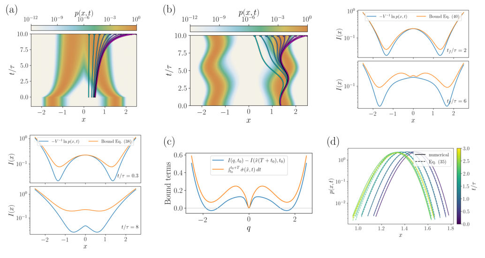
<figcaption class="paper-figure-caption"><b>Fig 1.</b> FIG. 1. Relaxation after an instantaneous quench of the double-well potential (a) and a periodically driven double-well system (b–d). (a) Top: Evolution of the probability density 𝑝(𝑐,𝑡) ≃𝑉𝑃(𝑛,𝑡) after the control parameter is switched at 𝑡= 0 from 𝜆−= 1.5 to 𝜆+ = 0, with 𝛼= 0.04 and 𝑉= 200. The density is obtained by numerical integration of the master equation in Eq. (8), truncated to |𝑛| ≤𝑛𝑐= 2.5𝑉. Colored curves show backward deterministic trajectories ˆ𝑥𝑡. Bottom: Scaled self-information 𝐼(𝑐,𝑡) = −𝑉−1 ln𝑝(𝑐,𝑡) at 𝑡/𝜏= 0.3 and 𝑡/𝜏= 8, compared with the autonomous ESL bound in Eq. (30) for 𝜎nc = 0. (b) Left: Evolution of the probability density 𝑝(𝑐,𝑡) ≃𝑉𝑃(𝑛,𝑡) under the protocol 𝜆(𝑡) =...</figcaption>
</figure>
</div>

<p><strong>Summary.</strong> This paper develops an Emergent Second Law for nonautonomous open quantum systems, providing a rigorous constraint on how macroscopic fluctuations evolve over time. By generalizing fluctuation theorems using large deviation theory, it establishes a bound on the rate function related to entropy production. This is significant because it offers a powerful, general thermodynamic tool to analyze non-equilibrium processes far from equilibrium.</p>
<p><strong>Why it may be interesting.</strong> This work provides a powerful, general thermodynamic constraint (the ESL) on non-equilibrium dynamics, which is crucial for understanding how systems relax or evolve under time-varying external fields, connecting fluctuation theorems to macroscopic observables.</p>
<details>
<summary>Detailed structure</summary>
<p><strong>Main problem.</strong> The paper derives an emergent second law that constrains time-dependent macroscopic fluctuations in nonautonomous open systems, generalizing existing fluctuation theorems.</p>
<p><strong>Main result.</strong> A key inequality is established bounding the time-dependent rate function in terms of the entropy production along the most probable evolution under the time-reversed driving protocol.</p>
<p><strong>Method.</strong> The derivation utilizes large deviation theory, transforming the master equation into a Hamilton-Jacobi equation to establish the bound.</p>
<p><strong>Model / system.</strong> The analysis applies to general macroscopic stochastic systems described by continuous-time Markov jump processes, exemplified by systems with time-dependent potentials and rates.</p>
<p><strong>Key observables.</strong> Rate function $I(c,t)$, Entropy Production (EP) rate $\langle\dot{\Sigma}
angle$, and the macroscopic density $p(c,t)$.</p>
<p><strong>Important parameters / regimes.</strong> Time-dependent driving protocols, linear-response/slow-driving regime, and the large-deviation limit ($V 	o \infty$).</p>
<p><strong>Assumptions / limitations.</strong> The derivation assumes the existence of a macroscopic limit and that the probability density follows the large-deviation form $p(c,t) \propto e^{-V I(c,t)}$.</p>
<p><strong>Figures summary.</strong> Figures illustrate the comparison between numerically calculated rate functions and the derived bounds for both instantaneous quenches and periodically driven systems.</p>
<p><strong>Paper structure.</strong> The paper builds from the general stochastic master equation to the large-deviation form, derives the Hamilton-Jacobi equation, establishes the general bound (ESL), and then specializes this bound to the linear-response and slow-driving regimes.</p>
</details>
<details>
<summary>Abstract</summary>
<p>For nonautonomous open systems described by macroscopic stochastic thermodynamics, we derive an emergent second law that constrains time-dependent macroscopic fluctuations by the entropy production along the most probable evolution under the time-reversed driving protocol. We show that this bound can be understood as a macroscopic consequence of the fluctuation theorem: the time reverse of this evolution provides a possible fluctuation path under the forward dynamics. In the linear-response and slow-driving regime, the bound becomes an equality to first order and generalizes the McLennan-Zubarev formula to the time-dependent probability density of nonautonomous systems with weak nonconservative affinities. We illustrate our results in a bistable system under sudden quenches and periodic driving.</p>
</details>
<p><sub><a href="#top">↑ back to top</a></sub></p>

<p><a id="paper-2608.21870"></a></p>
<h3 id="pair-filters-in-an-extended-hubbard-model-at-resonance"><a href="http://arxiv.org/abs/2608.21870v1">Pair Filters in an Extended Hubbard Model at Resonance</a></h3>
<p><strong>Authors:</strong> Ensuo Ma, Zhi Song<br>
<strong>Type:</strong> theory · <strong>Category:</strong> strongly correlated electrons · <strong>PDF:</strong> <a href="https://arxiv.org/pdf/2608.21870v1">https://arxiv.org/pdf/2608.21870v1</a><br>
<strong>Analysis basis:</strong> full PDF text, analyzed in chunks
<strong>Topic relevance:</strong> <code>analog quantum simulation</code> <strong>3/5</strong> · <code>Keldysh / 2PI / non-Gaussian methods</code> <strong>2/5</strong> · <code>methods for driven-dissipative</code> <strong>2/5</strong> · <code>Frenkel-Kontorova</code> <strong>1/5</strong></p>
<div class="figure-strip-hint">↔ Scroll figures horizontally</div>
<div class="paper-figures-scroll">
<figure class="paper-figure-card">
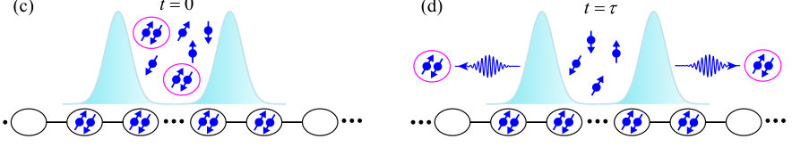
<figcaption class="paper-figure-caption"><b>Fig 1.</b> FIG. 1. Schematic illustration of the main results of this work. The cyan wave packet represents the barrier, consisting of two neighboring doublon pairs, while the peach wave packet denotes either a single-electron or a bound-pair wave packet. (a) Scattering of a single-electron wave packet from the doublon-pair barrier. We show that the single electron is completely reflected by the barrier. (b) Scattering of a bound-pair wave packet from the same barrier. In contrast, the bound pair is perfectly transmitted through the barrier. (c) and (d) Schematic illustration of a potential application of these scattering properties. Initially, a mixture of single electrons and bound pairs is confined...</figcaption>
</figure>
<figure class="paper-figure-card">
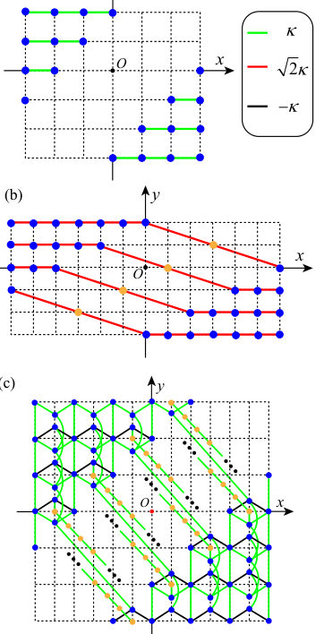
<figcaption class="paper-figure-caption"><b>Fig 2.</b> FIG. 2. Schematics of effective Hamiltonians for several rep- resentative cases under the resonant condition U = V ≫κ. (a) The effective Hamiltonian in the subspace constructed by the states including an electron and a double-doublon, given by Eq. (11). Each solid blue dot denotes a state defined in Eq. (10), where x, y give the horizontal and vertical coordinates. The dashed grid highlights the scale, and the green line marks the hopping strength. (b) The effective Hamiltonian given in Eq. (17), describing the interaction between a doublon and a double-doublon. Each solid blue dot represents a multiple- particle state given by Eq. (13) mixing a double-doublon and a doublon or a singlet...</figcaption>
</figure>
<figure class="paper-figure-card">
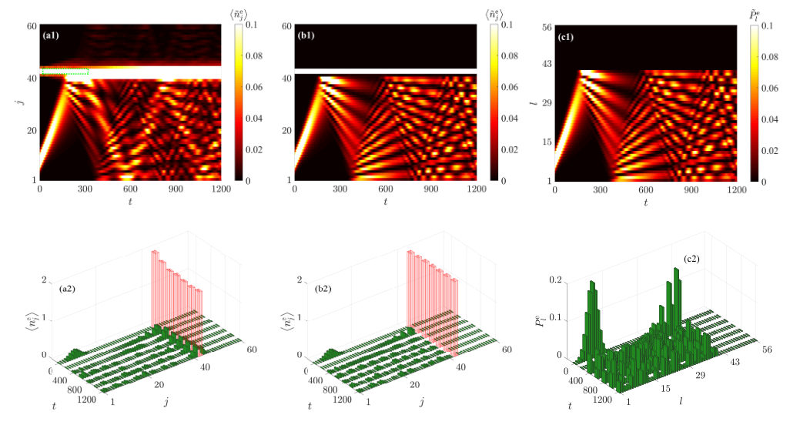
<figcaption class="paper-figure-caption"><b>Fig 3.</b> FIG. 3. Numerical results for single-electron wave packet dynamics. The initial state is given by Eq. (25) with j0 = 8, y0 = 42, k0 = π/4, and α = 4. The hopping strength in HT is set to κ = 0.1, and N = 60. Panels (a1) and (b1) show the mean particle number at each site defined in Eq. (27) for U = 0.5 and U = 5, respectively. Here ˜ne j is the reduced mean particle number, obtained by dividing ne j by a constant. The green dashed rectangle in panel (a1) marks the position of the double-doublon. Panel (c1) shows the dynamics performed with the effective Hamiltonian in Eq. (11) with the same initial state as in (a1)</figcaption>
</figure>
<figure class="paper-figure-card">
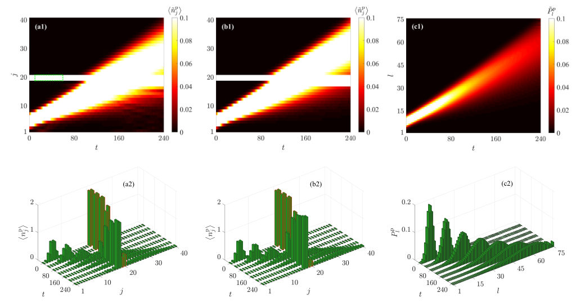
<figcaption class="paper-figure-caption"><b>Fig 4.</b> FIG. 4. Numerical results for two-electron wave packet dynamics. The initial state is given by Eq. (30) with j0 = 8, y0 = 19, k0 = π/4, and α = 4. The hopping strength in HT is set to κ = 0.1, and N = 40. Panels (a1) and (b1) show the mean particle number at each site defined in Eq. (32) for U = 1 and U = 5, respectively. ˜np j is the reduced mean particle number, similar to that in Fig. 3. The green dashed rectangle in panel (a1) marks the position of the double-doublon. Panel (c1) shows the</figcaption>
</figure>
</div>

<p><strong>Summary.</strong> This work analyzes the dynamics of bound pairs in the extended Hubbard model, revealing that a neighboring double-doublon structure acts as a highly efficient, particle-selective filter. It predicts that single electrons are perfectly reflected by this barrier, while composite singlet bound pairs pass through unimpeded. This mechanism offers a theoretical pathway for controlling quantum transport in strongly correlated systems.</p>
<p><strong>Why it may be interesting.</strong> The concept of a dynamically generated, particle-selective barrier is highly relevant for understanding engineered quantum materials or optical lattice setups where controlling the passage of composite excitations versus single particles is desired.</p>
<details>
<summary>Detailed structure</summary>
<p><strong>Main problem.</strong> Investigating the dynamics and scattering behavior of bound pairs (doublons) versus single fermions within an extended Hubbard model at resonance.</p>
<p><strong>Main result.</strong> The double-doublon barrier acts as a particle-selective filter, allowing perfect transmission for singlet bound pairs while completely reflecting single electrons.</p>
<p><strong>Method.</strong> Theoretical derivation using effective Hamiltonians and confirmation via time-dependent wave-packet simulations.</p>
<p><strong>Model / system.</strong> The extended Hubbard model on a 1D chain, characterized by hopping ($\kappa$), on-site interaction ($U$), and nearest-neighbor interaction ($V$). The analysis focuses on the strong-interaction regime ($U, V \gg \kappa$) and the resonant condition ($V=U$).</p>
<p><strong>Key observables.</strong> Reflection/transmission probabilities for single electrons and bound pairs; local particle density ($\langle n_e^j 
angle$); probability distributions ($P_e^l, P_p^l$).</p>
<p><strong>Important parameters / regimes.</strong> Resonant condition ($V=U$), strong-interaction limit ($U \gg \kappa$), and the relative strengths of $U, V, \kappa$.</p>
<p><strong>Assumptions / limitations.</strong> The analysis relies on projecting the dynamics onto low-energy subspaces and treating the hopping term ($H_T$) as a perturbation in the strong-interaction limit.</p>
<p><strong>Figures summary.</strong> Figures schematically illustrate the perfect reflection of single-electron wave packets and perfect transmission of bound-pair wave packets by the double-doublon barrier, demonstrating the filtering mechanism.</p>
<p><strong>Paper structure.</strong> The paper systematically derives effective Hamiltonians for different scattering processes (e.g., electron + double-doublon, doublon + double-doublon) and uses wave-packet simulations to confirm the predicted particle-selective scattering behavior in the resonant regime.</p>
</details>
<details>
<summary>Abstract</summary>
<p>We investigate the dynamics of bound pairs in an extended Hubbard model at resonance. We show that a single fermion and a singlet bound pair possess identical dispersion relations and scatter off each other. In contrast, a neighboring doublon pair is dynamically pinned in the strong-interaction regime. Remarkably, a single fermion and a singlet bound pair exhibit fundamentally different scattering behaviors when encountering a pinned doublon pair acting as a scattering center. While the singlet bound pair undergoes perfect transmission, the single fermion is completely reflected. These results demonstrate that a neighboring doublon pair functions as an efficient filter that separates bound pairs from single particles. Numerical simulations fully support the analytical predictions. Our findings provide a dynamical mechanism for generating and manipulating bound-pair states.</p>
</details>
<p><sub><a href="#top">↑ back to top</a></sub></p>

<p><a id="paper-2608.21679"></a></p>
<h3 id="simultaneous-intensity-and-frequency-control-for-optical-waveform-generation-using-an-acousto-optic-modulator"><a href="http://arxiv.org/abs/2608.21679v1">Simultaneous Intensity and Frequency Control for Optical Waveform Generation using an Acousto Optic Modulator</a></h3>
<p><strong>Authors:</strong> Hariprasad Madathil, Shengzhi Wang, F. Elohim Becerra<br>
<strong>Type:</strong> experiment · <strong>Category:</strong> other · <strong>PDF:</strong> <a href="https://arxiv.org/pdf/2608.21679v1">https://arxiv.org/pdf/2608.21679v1</a><br>
<strong>Analysis basis:</strong> full PDF text, analyzed in chunks
<strong>Topic relevance:</strong> <code>interference shaping light</code> <strong>3/5</strong> · <code>quantum optics experiment</code> <strong>3/5</strong> · <code>quantum measurements</code> <strong>2/5</strong></p>
<div class="figure-strip-hint">↔ Scroll figures horizontally</div>
<div class="paper-figures-scroll">
<figure class="paper-figure-card">
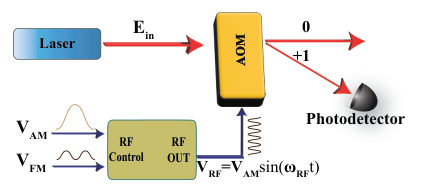
<figcaption class="paper-figure-caption"><b>Fig 1.</b> FIG. 1. Optical field manipulation using an AOM. Two con- trol voltages VAM (amplitude) and VF M (frequency), gener- ate an RF voltage VRF with controllable amplitude and fre- quency. The AOM generates diffracted beams from an input field Ein with frequency ω0. The field Eout in the first diffrac- tion order has a frequency and amplitude that depend on the control voltages VAM and VF M, and ω0.</figcaption>
</figure>
<figure class="paper-figure-card">

<figcaption class="paper-figure-caption"><b>Fig 2.</b> Figure 2 shows the response of a typical AOM to an in- put RF voltage VRF ≈VAM sin ωRF t, with ωRF ≈VF M. Figure 2(a) shows the (linear) relationship between the control voltage VF M and the corresponding frequency ωRF of VRF . Because of energy and momentum conser- vation in the acousto-optic effect in AOMs, the frequency of the optical field in the first diffraction order (+1) Eout is ω0 + ωRF . As a result, the linear dependence of ωRF with VF M allows for directly controlling the frequency of Eout, with a simple linear calibration of the RF source. Here, we develop a simple method that takes into ac- count, and corrects for, the non-linear response of AOMs to RF input voltages that...</figcaption>
</figure>
<figure class="paper-figure-card">
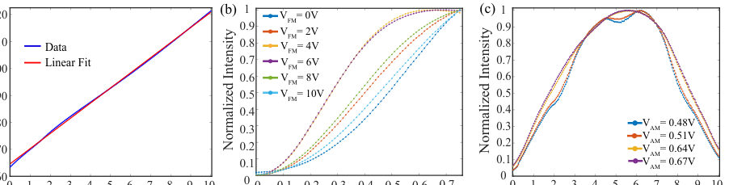
<figcaption class="paper-figure-caption"><b>Fig 3.</b> FIG. 2. Frequency and amplitude response for the single-pass AOM. (a) (Linear) relationship between the control voltage VF M and frequency ωRF of VRF , which is used to drive the AOM. (b) Diffraction efficiency curves into the 1st diffraction order, as observed with a photo detector, as a function of VAM for several values of VF M. (c) Diffraction efficiency curves for the 1st</figcaption>
</figure>
<figure class="paper-figure-card">

<figcaption class="paper-figure-caption"><b>Fig 4.</b> FIG. 3. A schematic diagram that describes the iterative process associated with the intensity procedure. (a) Shows the initial frequency sweep of the AOM by varying the VF M voltages. (b) The reciprocal function needed for intensity calibration (blue) and the corresponding V res AM required voltages (orange). (c) Frequency sweep after the first iteration making use of the reciprocal V res AM voltages found in (b).</figcaption>
</figure>
<figure class="paper-figure-card">

<figcaption class="paper-figure-caption"><b>Fig 5.</b> Figure 3 (c) shows the intensity of the first diffrac- tion order as a function of frequency with an ampli- tude control voltage VAM = V res AM(ω), showing a signifi- cantly smaller intensity variation over the full frequency span, as compared to Figure 3(a). This new intensity response function I1 is then multiplied by the input re- sponse function f0(ω) in that iteration, shown in Figure 3 (a), to obtain the total response function up to that point f1(ω) ≡f0(ω) ∗I1. Function f1(ω) can then be used as a new input response function in Eq.(3) in a second iteration of this algorithm. As described in the following section, after a few iterations of this simple al- gorithm, it is...</figcaption>
</figure>
</div>

<p><strong>Summary.</strong> This paper presents a novel, calibration-based method to achieve simultaneous, high-accuracy control over both the intensity and frequency of light generated by an Acousto-Optic Modulator (AOM). By employing an iterative correction algorithm, the authors compensate for the AOM's inherent nonlinear response. This allows for the generation of complex, programmable optical waveforms with unprecedented stability and precision.</p>
<p><strong>Why it may be interesting.</strong> This work provides a robust, hardware-based technique for high-precision optical waveform generation, which is crucial for advanced quantum optics experiments requiring stable, tunable light sources.</p>
<details>
<summary>Detailed structure</summary>
<p><strong>Main problem.</strong> The primary challenge is achieving precise, arbitrary simultaneous control over both the intensity and frequency of an optical field generated using an Acousto-Optic Modulator (AOM).</p>
<p><strong>Main result.</strong> The authors developed an iterative calibration method that successfully maintains optical power within 1% of a constant target value over a wide frequency tuning range ($\approx 100$ MHz).</p>
<p><strong>Method.</strong> The technique involves characterizing the AOM's nonlinear response to its RF drive voltages and applying an iterative correction algorithm to map input voltages accurately to desired output intensity and frequency shifts.</p>
<p><strong>Model / system.</strong> The system utilizes an Acousto-Optic Modulator (AOM) driven by controlled RF voltages ($V_{AM}$ and $V_{FM}$) to modulate an optical field. The control is achieved through iterative compensation rather than relying on a detailed physical model.</p>
<p><strong>Key observables.</strong> Output optical intensity ($I$), output optical field frequency ($\omega_{out}$), and the relative standard deviation ($\sigma$) of the intensity.</p>
<p><strong>Important parameters / regimes.</strong> Frequency tuning range ($\approx 100$ MHz), relative intensity deviation ($\sigma \approx 0.2\%$), and the required number of calibration iterations (up to fourteen).</p>
<p><strong>Assumptions / limitations.</strong> The method assumes that the AOM's nonlinear response can be characterized experimentally and compensated for iteratively, avoiding the need for a full physical model.</p>
<p><strong>Figures summary.</strong> Figures illustrate the general AOM setup, the iterative compensation process (showing intensity stabilization), and the successful generation of complex waveforms (e.g., Gaussian intensity with frequency sweeps) in both single-pass and double-pass configurations.</p>
<p><strong>Paper structure.</strong> The paper details the problem of AOM nonlinearity, proposes an iterative calibration methodology involving inverse function mapping, demonstrates the procedure using experimental setups, and applies the technique to generate complex, tailored optical waveforms.</p>
</details>
<details>
<summary>Abstract</summary>
<p>We describe a method for calibrating the response of an acousto-optic modulator (AOM) to enable precise, arbitrary control of the intensity and frequency of optical fields. The method involves characterizing the nonlinear response of the AOM to its input RF drive voltage and applying an iterative calibration/correction algorithm to accurately map input RF amplitude and frequency drive to output optical intensity and frequency shifts. After a few calibration/correction iterations, the calibration of the AOM maintains the optical power within 1$\%$ of a constant target value over relatively wide frequency tuning range ($\approx$100 MHz), with $σ=0.2\%$ relative deviation. We apply this calibration method to generate programmable waveforms and optical pulses with tailored intensity and frequency profiles that closely match their target specifications. This technique offers a simple and robust method for applications that require high-accuracy optical modulation.</p>
</details>
<p><sub><a href="#top">↑ back to top</a></sub></p>

<p><a id="paper-2608.21999"></a></p>
<h3 id="tenskel-a-combinatorial-observable-tensor-for-structured-measurement-and-reconstruction"><a href="http://arxiv.org/abs/2608.21999v1">TENSKEL: A Combinatorial Observable Tensor for Structured Measurement and Reconstruction</a></h3>
<p><strong>Authors:</strong> Yvan Richard<br>
<strong>Type:</strong> theory · <strong>Category:</strong> other · <strong>PDF:</strong> <a href="https://arxiv.org/pdf/2608.21999v1">https://arxiv.org/pdf/2608.21999v1</a><br>
<strong>Analysis basis:</strong> full PDF text, analyzed in chunks
<strong>Topic relevance:</strong> <code>quantum measurements</code> <strong>3/5</strong> · <code>Full counting statistics</code> <strong>1/5</strong> · <code>analog quantum simulation</code> <strong>1/5</strong> · <code>correlated / nonlocal dissipation</code> <strong>1/5</strong> · <code>driven-dissipative phase transition</code> <strong>1/5</strong> · <code>non-equilibrium universality</code> <strong>1/5</strong></p>
<div class="figure-strip-hint">↔ Scroll figures horizontally</div>
<div class="paper-figures-scroll">
<figure class="paper-figure-card">

<figcaption class="paper-figure-caption"><b>Fig 1.</b> Fig. 1: Conceptual organization of the TENSKEL observable construction for N = 5. (a) A classical die represents an elementary observable with uniform face probability. (b) An apparent two-dice structure introduces two observable coordinates. (c) The two coordinates are interpreted as complementary projections ap and bq acting on the same latent ensemble ΩN = {0, 1}N. (d) Aggregation of the 2N binary configurations produces Pascal/binomial multiplicities. (e) For a fixed context (p, q), only a constrained subset of observable pairs (a, b) is admissible. (f) The same latent hypercube supports the resulting context-dependent observable partition; the complete family of contexts is shown in...</figcaption>
</figure>
<figure class="paper-figure-card">

<figcaption class="paper-figure-caption"><b>Fig 2.</b> Fig. 2: Tensor folding hierarchy of the refined TENSKEL construction for N = 5. (a) Unfolded refined tensor in lexicographic ordering of the measurement- context coordinates (p, q) and latent Pascal coordinates (a, b). The tensor encodes the admissible couplings and combinatorial multiplicities induced between the two discrete domains. (b) Shell-ordered representation obtained by reindexing both domains according to the context shell S = p + q and the latent Pascal shell s = a + b. The permutation preserves the tensor entries while revealing a block geometry organized by the respective shell degeneracies. White separator lines indicate context- and latent-shell boundaries. (c) Latent-shell...</figcaption>
</figure>
</div>

<p><strong>Summary.</strong> This paper introduces TENSKEL, a novel combinatorial tensor framework designed to mathematically map the structure imposed on a latent configuration ensemble by partial measurements. It builds this tensor by analyzing how measurement contexts induce observable partitions on a binary hypercube, explicitly capturing combinatorial multiplicities. This provides a powerful, general mathematical tool for understanding the geometry of observation in complex systems.</p>
<p><strong>Why it may be interesting.</strong> While not directly focused on quantum dynamics, the concept of structuring measurement outcomes via tensor decomposition and analyzing contextuality in the observable space has strong parallels to quantum measurement theory and quantum information geometry.</p>
<details>
<summary>Detailed structure</summary>
<p><strong>Main problem.</strong> The paper addresses the challenge of explicitly representing the observable organization induced on a latent configuration ensemble when measurements are partial or aggregated.</p>
<p><strong>Main result.</strong> It introduces TENSKEL, a combinatorial observable tensor framework that mathematically characterizes how latent configurations are structured by the measurement process, providing a structured kernel for reconstruction.</p>
<p><strong>Method.</strong> The framework constructs a hierarchy of tensors by coupling measurement contexts to a latent Pascal organization using successive aggregation and folding operations on a binary latent ensemble.</p>
<p><strong>Model / system.</strong> The model uses a binary latent ensemble $\Omega_N = \{0, 1\}^N$, where measurements are defined by projections ($a_p$ and $b_q$) onto this hypercube structure.</p>
<p><strong>Key observables.</strong> The primary observable is the refined observable tensor $  ext{Tab}(p, q, a, b)$, which counts paths satisfying specific prefix conditions, and the induced kernel $   ext{Tab}^   op  ext{Tab}$.</p>
<p><strong>Important parameters / regimes.</strong> The dimensionality $N$ of the latent ensemble, and the context indices $(p, q)$ defining the measurement projections.</p>
<p><strong>Assumptions / limitations.</strong> The framework is purely combinatorial, providing a mathematical representation of observation structure rather than proposing a new physical algorithm.</p>
<p><strong>Figures summary.</strong> Figures conceptually illustrate the TENSKEL construction for $N=5$, showing how different measurement contexts induce observable partitions on the fixed latent hypercube, leading to Pascal/binomial multiplicities.</p>
<p><strong>Paper structure.</strong> The paper develops the framework by defining the observable tensor, decomposing the measurement context into inner and outer regions, deriving closed-form combinatorial expressions, and demonstrating the structure's symmetries and reconstruction potential.</p>
</details>
<details>
<summary>Abstract</summary>
<p>Many imaging problems seek to reconstruct underlying configurations from partial observable measurements. While reconstruction algorithms operate on these measurements, the observable organization induced by the measurement process is rarely represented explicitly.   We introduce TENSKEL, a combinatorial observable framework for structured measurement and reconstruction based on tensor representations defined over discrete domains. Starting from a binary latent ensemble, the framework constructs a hierarchy of tensors coupling measurement contexts to a latent Pascal organization through successive aggregation and folding operations. Each measurement context induces an observable partition of the same latent ensemble, and the resulting tensor formulation makes explicit the associated combinatorial multiplicities, shell organization, degeneracies, and induced reconstruction geometry.   Rather than introducing a new reconstruction algorithm, this framework provides a mathematical representation of how latent configurations become organized under observation. The induced tensor kernel characterizes similarities between latent coordinates through their measurement-context responses, while regularized inversion provides a structured reconstruction of the latent representation from observable measurements. The binary construction further admits a natural multinomial extension to discrete simplex-supported latent representations.   Connections to Pascal cellular automata and structured discrete color mappings illustrate respectively compressed and multinomial realizations of the framework. More generally, TENSKEL provides a combinatorial basis for reasoning about the organization induced by observation, with potential relevance to computational imaging, inverse problems, structured sensing, and quantum-inspired measurement formulations.</p>
</details>
<p><sub><a href="#top">↑ back to top</a></sub></p>

<p><a id="paper-2608.22405"></a></p>
<h3 id="dynamics-of-flat-top-bubble-vector-solitons"><a href="http://arxiv.org/abs/2608.22405v1">Dynamics of Flat-Top--Bubble Vector Solitons</a></h3>
<p><strong>Authors:</strong> M. O. D. Alotaibi, L. Al Sakkaf, U. Al Khawaja<br>
<strong>Type:</strong> theory · <strong>Category:</strong> quantum gases · <strong>PDF:</strong> <a href="https://arxiv.org/pdf/2608.22405v1">https://arxiv.org/pdf/2608.22405v1</a><br>
<strong>Analysis basis:</strong> full PDF text, analyzed in chunks
<strong>Topic relevance:</strong> <code>Keldysh / 2PI / non-Gaussian methods</code> <strong>3/5</strong> · <code>analog quantum simulation</code> <strong>2/5</strong> · <code>methods for driven-dissipative</code> <strong>2/5</strong></p>
<div class="figure-strip-hint">↔ Scroll figures horizontally</div>
<div class="paper-figures-scroll">
<figure class="paper-figure-card">

<figcaption class="paper-figure-caption"><b>Fig 1.</b> FIG. 1. Normalized variational binding potential evalu- ated using the fitted parameters reported in the following nu- merical section: au = 12.9298, p = 22.7550, av = 12.6487, m = 21.5548, N1 = 30.65238, N2 = 30, and κ = 4. The solid curve is the numerically evaluated potential from Eq. (32), and the dashed curve is the local quadratic approximation in Eq. (38). The inset enlarges the small-displacement region near the aligned state.</figcaption>
</figure>
<figure class="paper-figure-card">

<figcaption class="paper-figure-caption"><b>Fig 2.</b> FIG. 4. Comparison between the stationary profiles ob- tained by imaginary-time propagation (solid blue curves) and the normalized super-Gaussian ansatz (dashed orange curves) evaluated using the fitted parameters in Eq. (42). (a) Background-component density |u|2, showing the density bubble; the dotted line denotes the background density ρ0. (b) Localized flat-top density |v|2.</figcaption>
</figure>
<figure class="paper-figure-card">

<figcaption class="paper-figure-caption"><b>Fig 3.</b> FIG. 2. Stationary density profiles for g = q = 4, ρ0 = 1.2, and N2 = 30. (a) Coupled flat-top–bubble state with κ = 4. (b) Decoupled case with κ = 0. The dotted line denotes the background density ρ0.</figcaption>
</figure>
<figure class="paper-figure-card">

<figcaption class="paper-figure-caption"><b>Fig 4.</b> FIG. 3. Stationary real-time evolution of the coupled state for g = q = 4, ρ0 = 1.2, κ = 4, and N2 = 30. (a) Density |v|2</figcaption>
</figure>
<figure class="paper-figure-card">

<figcaption class="paper-figure-caption"><b>Fig 5.</b> Figure 5 shows the component centers, their relative motion, and the FFT peak used to obtain Eq. (46). The</figcaption>
</figure>
</div>

<p><strong>Summary.</strong> This work analyzes the dynamics of two-component vector solitons governed by nonlinear Schrödinger equations. By employing a variational approach, the authors predict the internal oscillation frequency and establish a critical energy threshold for soliton stability. Simulations confirm that above this threshold, the localized component can partially escape the background density bubble.</p>
<p><strong>Why it may be interesting.</strong> The study of soliton dynamics, particularly the interplay between localized structures (FTS) and background fields (bubble), is highly relevant to nonlinear wave physics, which shares mathematical techniques with Bose-Einstein Condensates (BECs) and nonlinear optics.</p>
<details>
<summary>Detailed structure</summary>
<p><strong>Main problem.</strong> The paper investigates the dynamics of two-component flat-top--bubble vector solitons, focusing on their internal oscillations and the conditions for partial escape.</p>
<p><strong>Main result.</strong> The system exhibits weak internal oscillations whose frequency is predicted to be independent of amplitude, and a critical energy scale ($K_{	ext{escape}}$) was determined above which the localized component substantially escapes the background bubble.</p>
<p><strong>Method.</strong> The dynamics are analyzed using a variational approximation applied to a background-subtracted formulation, supplemented by real-time numerical simulations.</p>
<p><strong>Model / system.</strong> The system is modeled by coupled cubic-quintic nonlinear Schrödinger equations describing two interacting components: a localized flat-top soliton (FTS) and a background density bubble. The interaction forms a composite bound state.</p>
<p><strong>Key observables.</strong> Internal mode frequency ($\omega$), relative separation ($\ell(t)$), and the fraction of the FTS norm remaining within the bubble ($F_{	ext{bubble}}(t)$).</p>
<p><strong>Important parameters / regimes.</strong> The escape energy scale ($K_{	ext{escape}}$) and the coupling/nonlinearity parameters ($g, q, 
ho_0$).</p>
<p><strong>Assumptions / limitations.</strong> The analysis relies on using normalized super-Gaussian profiles (ansatz) for the collective coordinates and assumes the background is modulationally stable.</p>
<p><strong>Figures summary.</strong> Figures illustrate the variational binding potential, time evolution of component densities for coupled vs. decoupled states, and the dependence of oscillation frequency and component integrity on the strength of an external phase kick.</p>
<p><strong>Paper structure.</strong> The paper progresses by defining the model, developing the variational approximation using super-Gaussian ansatz, presenting numerical verification of internal oscillations, and finally using energy matching to predict the critical escape scale.</p>
</details>
<details>
<summary>Abstract</summary>
<p>We investigate the dynamics of two-component flat-top--bubble vector solitons using a variational approximation and numerical simulations. The system is described by coupled cubic-quintic nonlinear Schrödinger equations with repulsive intercomponent coupling. We introduce a self-induced mechanism in which a localized flat-top soliton (FTS) generates a density bubble in a second component: the localized density acts as a repulsive potential for the background field, creating a composite bound state. A background-subtracted formulation and normalized super-Gaussian profiles yield collective-coordinate equations for the component centers and an effective interaction potential for their relative separation. The potential forms a binding well that is nearly triangular over its global displacement range but smooth and locally parabolic near its minimum. The variational approximation consequently predicts harmonic internal oscillations whose frequency is independent of amplitude in the small-oscillation regime. Real-time simulations verify this weak-kick behavior with good agreement between the variational and numerical frequencies. For strong phase imprints, equating the exact kick energy to the variational binding depth predicts a kick scale \(K_{\mathrm{escape}}\) for the onset of partial FTS escape. Real-time simulations support this prediction: below this scale, the composite remains nearly intact, whereas above it, a substantial fraction of the localized component leaves the bubble.</p>
</details>
<p><sub><a href="#top">↑ back to top</a></sub></p>

<p><a id="paper-2608.23093"></a></p>
<h3 id="partial-moment-pinns-for-caldeira-leggett-parameter-learning-in-quantum-brownian-motion"><a href="http://arxiv.org/abs/2608.23093v1">Partial-Moment PINNs for Caldeira--Leggett Parameter Learning in Quantum Brownian Motion</a></h3>
<p><strong>Authors:</strong> Krishna Bhatia<br>
<strong>Type:</strong> theory · <strong>Category:</strong> statistical mechanics · <strong>PDF:</strong> <a href="https://arxiv.org/pdf/2608.23093v1">https://arxiv.org/pdf/2608.23093v1</a><br>
<strong>Analysis basis:</strong> full PDF text, analyzed in chunks
<strong>Topic relevance:</strong> <code>methods for driven-dissipative</code> <strong>3/5</strong> · <code>Keldysh / 2PI / non-Gaussian methods</code> <strong>1/5</strong> · <code>correlated / nonlocal dissipation</code> <strong>1/5</strong> · <code>driven-dissipative phase transition</code> <strong>1/5</strong> · <code>quantum measurements</code> <strong>1/5</strong></p>
<div class="figure-strip-hint">↔ Scroll figures horizontally</div>
<div class="paper-figures-scroll">
<figure class="paper-figure-card">

<figcaption class="paper-figure-caption"><b>Fig 1.</b> Fig. 1. Workflow of the proposed Partial-Moment PINN for CL/HPZ parameter recovery from partial moment observations.</figcaption>
</figure>
<figure class="paper-figure-card">

<figcaption class="paper-figure-caption"><b>Fig 2.</b> Fig. 2. PINN predictions and ODE rollouts vs. ground truth for µx, µp, and σxx on the LTI dataset. Solid black: truth. Dashed: direct PINN prediction. Dotted: rollout using learned coefficients. The constrained PINN (green/dotted red) better respects dynamics, especially for σxx.</figcaption>
</figure>
</div>

<p><strong>Summary.</strong> This paper develops a novel Partial-Moment PINN to estimate parameters of the Caldeira-Leggett model for Quantum Brownian Motion using only partial moment measurements. By embedding physical laws (like FDT and PSD) into the network loss function, the method achieves superior parameter recovery and dynamical prediction fidelity compared to traditional numerical solvers. It demonstrates a powerful synergy between machine learning and open quantum system theory for experimental data analysis.</p>
<p><strong>Why it may be interesting.</strong> This work is highly relevant as it merges advanced machine learning (PINNs) with open quantum systems theory, providing a robust data-driven framework for parameter estimation in complex quantum dynamics where full state tomography is impossible.</p>
<details>
<summary>Detailed structure</summary>
<p><strong>Main problem.</strong> The paper addresses the challenging problem of recovering physical parameters ($\omega, \gamma$) governing Quantum Brownian Motion (QBM) when only partial, noisy moment traces are available from measurements.</p>
<p><strong>Main result.</strong> A constrained Partial-Moment PINN successfully recovers parameters with high accuracy, significantly outperforming traditional methods like Finite Differences and Kalman-EM, even when only a subset of moments are observed.</p>
<p><strong>Method.</strong> The authors employ a Physics-Informed Neural Network (PINN) that operates directly on the evolution equations governing the first and second moments of the system, enforcing physical constraints like Positive Semi-Definiteness (PSD) and Fluctuation-Dissipation Theorems (FDT).</p>
<p><strong>Model / system.</strong> The system modeled is a quantum harmonic oscillator coupled to an Ohmic bath, described by the Caldeira-Leggett model. The dynamics are captured by closed linear Ordinary Differential Equations (ODEs) for the five first/second moments.</p>
<p><strong>Key observables.</strong> The primary observables are the five moments: $\{\mu_x, \mu_p, \sigma_{xx}, \sigma_{pp}, \sigma_{xp}\}$; the analysis focuses on recovering parameters from subsets like $\{\mu_x, \sigma_{xx}, \sigma_{xp}\}$.</p>
<p><strong>Important parameters / regimes.</strong> The key parameters to learn are the oscillator frequency ($\omega$) and the damping rate ($\gamma$), along with the diffusion coefficients ($D_{xx}, D_{pp}, D_{xp}$).</p>
<p><strong>Assumptions / limitations.</strong> Key assumptions include operating in the high-temperature, Markovian limit, enforcing the FDT ($D_{pp} = 2m\gamma k_B T$), and using sparse $\sigma_{pp}$ anchors to maintain numerical stability.</p>
<p><strong>Figures summary.</strong> The notes reference Tables II, III, IV, and V, which summarize parameter recovery accuracy, ODE rollout error comparison, Fisher identifiability analysis (Condition Number), and Bootstrap confidence intervals, respectively.</p>
<p><strong>Paper structure.</strong> The paper introduces the QBM model and the moment ODEs, proposes the constrained Partial-Moment PINN architecture, details the composite loss function incorporating physical constraints, and validates the method by comparing its performance against established numerical techniques using synthetic data.</p>
</details>
<details>
<summary>Abstract</summary>
<p>We study parameter recovery in the Caldeira--Leggett (quantum Brownian) oscillator from partial moment traces. Our model is a moment-level PINN that predicts the five first/second moments and enforces the linear CL/HPZ ODEs by automatic differentiation. Physical structure is imposed through a PSD (Cholesky) covariance head, high-temperature CL assumptions with $D_{xp}\approx0$, and fluctuation--dissipation ties between $D_{pp}$ and $γ$. On synthetic CL data with channels ${μ_x,σ_{xx},σ_{xp}}$, the constrained variant recovers $(ω,γ)$ accurately, stabilizes $D_{pp}$, and achieves low rollout error compared to finite differences and Kalman--EM (expectation--maximization) with exact Van Loan discretization. Fisher-style checks confirm that diffusion needs at least one variance observable, and sparse $σ_{pp}$ ``anchors'' restore conditioning. We also show that the same PINN can learn time-varying HPZ coefficients.</p>
</details>
<p><sub><a href="#top">↑ back to top</a></sub></p>

<p><a id="paper-2608.23160"></a></p>
<h3 id="quantics-tensor-cross-interpolation-for-high-order-strong-coupling-expansions"><a href="http://arxiv.org/abs/2608.23160v1">Quantics tensor cross interpolation for high-order strong-coupling expansions</a></h3>
<p><strong>Authors:</strong> Kanghyeon Kim, Lei Geng, Philipp Werner, Aaram J. Kim<br>
<strong>Type:</strong> theory · <strong>Category:</strong> strongly correlated electrons · <strong>PDF:</strong> <a href="https://arxiv.org/pdf/2608.23160v1">https://arxiv.org/pdf/2608.23160v1</a><br>
<strong>Analysis basis:</strong> full PDF text, analyzed in chunks
<strong>Topic relevance:</strong> <code>Keldysh / 2PI / non-Gaussian methods</code> <strong>3/5</strong> · <code>methods for driven-dissipative</code> <strong>3/5</strong> · <code>analog quantum simulation</code> <strong>1/5</strong></p>
<div class="figure-strip-hint">↔ Scroll figures horizontally</div>
<div class="paper-figures-scroll">
<figure class="paper-figure-card">

<figcaption class="paper-figure-caption"><b>Fig 1.</b> FIG. 1. Diagram generation from the Luttinger-Ward Φ or the grand potential Ω. The PP self-energy (physical Green’s function) diagram is obtained by cutting a PP Green’s func- tion (hybridization function) line. Blue squares (circles) rep- resent impurity creation (annihilation) operators. The bot- tom panels show examples of Σpp and Gphy contributions represented on the Keldysh contour. Internal vertices (black dots) are integrated over the contour, respecting the cyclic ordering.</figcaption>
</figure>
<figure class="paper-figure-card">

<figcaption class="paper-figure-caption"><b>Fig 2.</b> FIG. 2. Transformation of a 3OA graph for checking the 2PI condition. The left panel shows the original diagram, the top right panel the definition of the supervertices (orange boxes), and the bottom right panel the corresponding supergraph con- sisting of supervertices connected by PP propagators.</figcaption>
</figure>
<figure class="paper-figure-card">

<figcaption class="paper-figure-caption"><b>Fig 3.</b> FIG. 3. Number of XOA diagrams as a function of diagram order X. The inset shows the ratio between the number of 2PI diagrams and the total (including two-particle reducible) number of diagrams. The dashed line in the inset shows the exact asymptotic value of the ratio [40].</figcaption>
</figure>
<figure class="paper-figure-card">

<figcaption class="paper-figure-caption"><b>Fig 4.</b> FIG. 4. Bond dimension χ required to represent σ(X) (left column) and g(X) (right column) of the half-filled Ander- son impurity model using the scale-separated and variable- separated schemes for X = 2 (top row) and 3 (bottom row). The impurity site with U = 2 and µ = 1 is coupled to the fermionic bath of the semi-circular density of states (the half- bandwidth D as the energy unit) via the constant coupling g = 0.8. The temperature is T = 0.1. Each tensor train was constructed via QTCI with a maximum pointwise error of ∼10−4, verified against 106 randomly sampled tensor en- tries. Shaded lines show the bond-dimension profile of the individual tensor-trains; solid lines denote their...</figcaption>
</figure>
<figure class="paper-figure-card">

<figcaption class="paper-figure-caption"><b>Fig 5.</b> FIG. 5. Diagram-summed contribution of a 3OA configura- tion to the PP self-energy (left) and Green’s function (bottom right). The top right panel illustrates the reparametrization of the configuration in terms of Keldysh indices and physical times.</figcaption>
</figure>
</div>

<p><strong>Summary.</strong> This work presents a novel computational technique, quantics tensor cross interpolation (QTCI), to overcome the factorial complexity of high-order strong-coupling expansions in DMFT. By using a variable-separated framework, the authors achieve dramatically reduced computational resource requirements, allowing accurate study of complex phenomena like photo-doping and convergence analysis in strongly correlated materials.</p>
<p><strong>Why it may be interesting.</strong> The development of advanced tensor network techniques like QTCI for calculating correlation functions in non-equilibrium settings provides powerful, general-purpose tools applicable to open quantum systems beyond standard quantum optics models.</p>
<details>
<summary>Detailed structure</summary>
<p><strong>Main problem.</strong> The paper addresses the computational bottleneck in calculating high-order self-energies and Green's functions for strongly correlated electron systems using Dynamical Mean-Field Theory (DMFT).</p>
<p><strong>Main result.</strong> The introduction of quantics tensor cross interpolation (QTCI) in a variable-separated framework significantly reduces the required bond dimensions, enabling self-consistent calculations up to the fourth order and revealing asymptotic behavior up to the sixth order.</p>
<p><strong>Method.</strong> The authors employ diagrammatic techniques within the strong-coupling expansion, utilizing QTCI to efficiently represent multi-dimensional functions arising from contour time discretization, which is superior to previous scale-separated approaches.</p>
<p><strong>Model / system.</strong> The study focuses on strongly correlated electron systems, often modeled by the Anderson impurity model or the Hubbard model, analyzed in both equilibrium and non-equilibrium (photo-doped) regimes.</p>
<p><strong>Key observables.</strong> Spectral functions, physical Green's functions, and the self-energy ($\Sigma^{pp}$), along with magnetization and convergence diagnostics.</p>
<p><strong>Important parameters / regimes.</strong> The order of the strong-coupling expansion (up to 6th order), temperature ($T$), interaction strength ($U$), and photo-doping concentration ($\delta$).</p>
<p><strong>Assumptions / limitations.</strong> The formalism relies on the Two-Particle Irreducible (2PI) condition to ensure correct diagram summation, and the method assumes the applicability of tensor network representations for the complex functions.</p>
<p><strong>Figures summary.</strong> Figures illustrate diagram generation (Luttinger-Ward functional), compare bond dimensions ($\chi$) between interpolation schemes (scale-separated vs. variable-separated), and show spectral functions for various correlated and photo-doped phases.</p>
<p><strong>Paper structure.</strong> The paper builds from the general problem of high-order DMFT calculations, introduces QTCI as the solution, details the variable-separated parametrization and diagram-summed scheme, and validates the method by applying it to equilibrium, photo-doped, and noninteracting limits.</p>
</details>
<details>
<summary>Abstract</summary>
<p>Real-time impurity solvers enable the study of transport phenomena and the description of nonequilibrium lattice systems within the framework of dynamical mean-field theory (DMFT). They also provide direct access to the spectral functions of both equilibrium and nonequilibrium systems. A widely used approach is the self-consistent strong-coupling expansion, whose lowest-order implementation corresponds to the non-crossing approximation. Higher-order implementations, however, are computationally demanding because the number of diagram topologies grows factorially with expansion order, while the evaluation of self-energies and Green's functions requires increasingly high-dimensional integrations. Here, we demonstrate that the latter challenge can be mitigated by employing quantics tensor cross interpolation in a variable-separated framework. Compared with the previously used scale-separated approach, the new scheme yields substantially lower bond dimensions and capacitates self-consistent steady-state DMFT calculations up to fourth order. We illustrate its performance with representative results for both equilibrium and photo-doped systems. In addition, we analyze the convergence of the strong-coupling expansion in the challenging noninteracting limit by computing diagrams up to sixth order. At this order, the onset of the asymptotic regime of the strong-coupling expansion becomes apparent, which allows the application of extrapolation techniques.</p>
</details>
<p><sub><a href="#top">↑ back to top</a></sub></p>

<p><a id="paper-2608.21783"></a></p>
<h3 id="reinventing-the-single-pixel-imaging-paradigm-via-quantum-operator-based-signal-processing"><a href="http://arxiv.org/abs/2608.21783v1">Reinventing the Single-pixel Imaging Paradigm via Quantum-Operator-Based Signal Processing</a></h3>
<p><strong>Authors:</strong> Bu-Ran Yu, Yi-Zhu Zhang, Kan-Xu Jia, Qian-Qian Bao, Shao-Ying Meng, Xi-Hao Chen<br>
<strong>Type:</strong> theory · <strong>Category:</strong> quantum information and computing · <strong>PDF:</strong> <a href="https://arxiv.org/pdf/2608.21783v1">https://arxiv.org/pdf/2608.21783v1</a><br>
<strong>Analysis basis:</strong> full PDF text, analyzed in chunks
<strong>Topic relevance:</strong> <code>quantum measurements</code> <strong>3/5</strong> · <code>Tavis-Cummings &amp; cavity-many-emitter</code> <strong>1/5</strong> · <code>analog quantum simulation</code> <strong>1/5</strong> · <code>driven-dissipative phase transition</code> <strong>1/5</strong> · <code>interference shaping light</code> <strong>1/5</strong></p>
<div class="figure-strip-hint">↔ Scroll figures horizontally</div>
<div class="paper-figures-scroll">
<figure class="paper-figure-card">

<figcaption class="paper-figure-caption"><b>Fig 1.</b> Figure 1: Schematic of (a) passive SPI setup and (b) its corresponding quantum operator formalism.</figcaption>
</figure>
<figure class="paper-figure-card">

<figcaption class="paper-figure-caption"><b>Fig 2.</b> Figure 2: Quantum circuit schematic of the proposed pre-measurement processing and QSP readout protocol. Register A is initialized in |0⟩and undergoes the H-U(ϕj)-H interferometric sequence, where the phase gate U(ϕj) encodes the bucket signal through ϕj = kIj with Ij = Tr(ρj). Register B is initialized in |0 · · · 0⟩and loaded with the modulation-pattern information through Uj. The auxiliary qubit is prepared in |0⟩and participates in the CNOT-assisted compression operation UCX, which rearranges the information-carrying blocks of the joint state into the compact effective density matrix ρc. The QSP module then acts on the eigenstate |Vk⟩and an ancilla qubit by alternating controlled...</figcaption>
</figure>
<figure class="paper-figure-card">

<figcaption class="paper-figure-caption"><b>Fig 3.</b> Figure 3: Weak-light reconstruction benchmark for the standard 64×64 cameraman object under a fixed photon-starved Hadamard-SPI acquisition. (a) Ground-truth object. (b) Classical SPI reconstruction with shot-noise-limited bucket readout. (c) Quantum-QSP reconstruction using coherent phase-estimation scaling and finite sequence length L = 6 and κ = 1.57. (d),(e) Residual maps on the same color scale. (f) Horizontal line profile through y = 30 in panels (a)-(c). The same Hadamard sampling operator is used for both methods, with Nph = 3000 photons per differential pattern pair.</figcaption>
</figure>
<figure class="paper-figure-card">

<figcaption class="paper-figure-caption"><b>Fig 4.</b> Figure 4: Photon-number precision scaling used to interpret the weak-light reconstruction benchmark. (a) Relative intensity error versus average photon number Nph. The orange curve denotes the classical shot-noise law ϵcl = N −1/2 ph , the blue curve denotes the ideal coherent quantum scaling ϵq = N −1 ph , and the blue dotted curve includes a finite-QSP approximation floor of 8.1 × 10−5. The dashed vertical marker indicates Nph = 3 × 103, the photon budget used in Fig. 3; the dotted vertical marker at Nph = 4096 corresponds to one photon per spatial mode for a 64 × 64 image. (b) Squared relative error, which gives slopes −1 and −2 for the classical and ideal quantum models, respectively....</figcaption>
</figure>
<figure class="paper-figure-card">

<figcaption class="paper-figure-caption"><b>Fig 5.</b> Figure 5: QSP approximation and eigenvalue-separation behavior as a function of sequence length. (a) Exponential approximation-error bound ∆(L) = exp(−κL) with κ = 1.57, chosen such that ∆(4.4) ≃10−3. The orange dashed line marks the 10−3 target accuracy, and the green shaded region indicates the shallow-sequence window L = 5–10. (b) Required sequence length estimated from L = (2/π) ln(1/δ); for target accuracy δ = 10−3 the estimate gives L ≃4.4. (c) Step-filter response fs(τ) versus mapped eigenvalue τ = rkx for L = 2, 4, 6, 10. The gray band 0.42 &lt; τ &lt; 0.58 is the forbidden transition region where eigenvalues should not be placed. (d) Leakage from the lower mapped eigenvalue τ2 = 0.32,...</figcaption>
</figure>
</div>

<p><strong>Summary.</strong> This paper proposes a quantum-operator-based theoretical framework to revolutionize single-pixel imaging by overcoming the classical shot-noise limit. By encoding spatial information into the eigenvalue spectrum of a quantum operator, the method achieves Heisenberg scaling for reconstruction accuracy. This establishes a universal blueprint for next-generation, quantum-enhanced sensing modalities.</p>
<p><strong>Why it may be interesting.</strong> This work is highly relevant as it merges quantum optics (light-matter interaction, quantum states) with advanced quantum information processing techniques (state compression, unitary evolution) to solve a practical sensing problem, providing a blueprint for quantum-enhanced measurement.</p>
<details>
<summary>Detailed structure</summary>
<p><strong>Main problem.</strong> The paper addresses the fundamental bottleneck in computational imaging and high-dimensional sensing caused by the classical, decoupled acquisition-reconstruction hierarchy, particularly limiting Single-Pixel Imaging (SPI).</p>
<p><strong>Main result.</strong> The authors introduce a quantum-operator-based framework that theoretically demonstrates surpassing the classical shot-noise limit to approach the ultimate Heisenberg limit for spatial reconstruction.</p>
<p><strong>Method.</strong> The core method involves mapping the spatial inverse problem onto the eigenvalue spectrum of a quantum operator, utilizing tailored light-matter interactions and coherent signal processing.</p>
<p><strong>Model / system.</strong> The model uses a quantum-operator formalism applied to passive SPI setups, evolving the system state via object operators and subsequent modulation, which is then processed through a quantum interface involving SiV color centers and nanophotonic cavities.</p>
<p><strong>Key observables.</strong> The primary observables are the reconstructed density matrix ($
ho_{rec}$) and the achieved scaling of the reconstruction error ($\epsilon$), which is compared against the classical shot-noise limit.</p>
<p><strong>Important parameters / regimes.</strong> Key parameters include the total detected photon budget ($N_{frame} = 1.23 	imes 10^7$), the spatial-register size (e.g., $64 	imes 64$ object), and the coherence time ($T_2$).</p>
<p><strong>Assumptions / limitations.</strong> The analysis assumes a coherent mode-to-qubit interface and relies on approximations for the quantum signal processing (QSP) depth, which introduces an error floor ($\delta_L$).</p>
<p><strong>Figures summary.</strong> Figure 1 schematically illustrates the passive SPI setup and its corresponding quantum operator formalism. Table 1 provides a physical resource estimate for a benchmark $64 	imes 64$ Hadamard-SPI test.</p>
<p><strong>Paper structure.</strong> The paper progresses from defining the classical bottleneck in SPI, to formulating the quantum-operator framework for state evolution, detailing the quantum interface for state compression and feature extraction (QPCA), and finally demonstrating the reconstruction via controlled unitary evolution to achieve Heisenberg scaling.</p>
</details>
<details>
<summary>Abstract</summary>
<p>A fundamental bottleneck across modern computational imaging and high-dimensional sensing is the conventional decoupled acquisition-reconstruction hierarchy, which subjects high-dimensional spatial sensing to the classical shot-noise limit and intense computational overhead. As a prominent manifestation of this limitation, single-pixel imaging (SPI) suffers severely from this paradigm. We reinvent this paradigm by introducing a quantum-operator-based SPI theoretical framework driven by coherent signal processing. Within this architecture, the spatial inverse problem is analytically mapped into the eigenvalue spectrum of a quantum operator via tailored light-matter interactions. By analytically synthesizing non-linear reconstruction operators via ultra-shallow quantum architectures, we theoretically demonstrate an exponential decay of spatial approximation errors, completely bypassing traditional linear solvers. This operator-space embedding not only shields reconstruction from noise via a strategic error-saturation zone but also bridges the gap from classical shot-noise scaling $\mathcal{O}(1/\sqrt{N_{\text{ph}}})$ to the ultimate Heisenberg limit $\mathcal{O}(1/N_{\text{ph}})$. Crucially, while formulated within SPI, this coherent operator paradigm fundamentally extends to general photon-starved, high-dimensional imaging modalities. This work establishes a universal theoretical blueprint for next-generation quantum-enhanced sensing, shifting the paradigm from iterative optimization to coherent operator-space evolution.</p>
</details>
<p><sub><a href="#top">↑ back to top</a></sub></p>

<p><a id="paper-2608.23372"></a></p>
<h3 id="entanglement-enhanced-fluctuation-free-daemonic-ergotropy-with-random-measurements"><a href="http://arxiv.org/abs/2608.23372v1">Entanglement-enhanced fluctuation-free daemonic ergotropy with random measurements</a></h3>
<p><strong>Authors:</strong> Saptarshi Roy, Pritam Halder, Tamal Guha, Hyunseok Jeong<br>
<strong>Type:</strong> theory · <strong>Category:</strong> statistical mechanics · <strong>PDF:</strong> <a href="https://arxiv.org/pdf/2608.23372v1">https://arxiv.org/pdf/2608.23372v1</a><br>
<strong>Analysis basis:</strong> full PDF text, analyzed in chunks
<strong>Topic relevance:</strong> <code>quantum measurements</code> <strong>3/5</strong> · <code>Full counting statistics</code> <strong>1/5</strong> · <code>correlated / nonlocal dissipation</code> <strong>1/5</strong> · <code>driven-dissipative phase transition</code> <strong>1/5</strong></p>
<div class="figure-strip-hint">↔ Scroll figures horizontally</div>
<div class="paper-figures-scroll">
<figure class="paper-figure-card">

<figcaption class="paper-figure-caption"><b>Fig 1.</b> FIG. 1. Schematic of the randomized daemonic ergotropy (RDE) extraction process. Random measurements on the auxiliary system A assist ergotropy extraction from the system S, and the extracted ergotropy is averaged over the measurement ensemble. In contrast to the conventional setting with optimized assisting measurements, randomized measurements reveal a clear separation between the per- formance of (a) entangled states and (b) classically correlated states. Entanglement can provide both a larger average ergotropic gain and reduced measurement-induced fluctuations.</figcaption>
</figure>
<figure class="paper-figure-card">

<figcaption class="paper-figure-caption"><b>Fig 2.</b> FIG. 2. Randomized daemonic gain with fixed system marginal ρS = p |0⟩⟨0|+(1−p) |1⟩⟨1|. The maximal value of gain in RDE, ob- tained from general separable states via Theorem 5 is plotted against p (solid blue line). The linear bound for the cq states obtained in Theorem 1 is plotted via dashed orange lines. The green solid line is the maximal achievable gain for optimal pure entangled state (Corol- lary 1). All axes are dimensionless.</figcaption>
</figure>
</div>

<p><strong>Summary.</strong> This work develops the concept of randomized daemonic ergotropy to quantify the thermodynamic advantage provided by quantum entanglement. It proves that while optimal measurements might not reveal an advantage, randomizing the measurement process exposes a fundamental trade-off: achieving positive average gain requires non-zero fluctuations for classical states, whereas entangled states can maintain high gain while remaining fluctuation-free.</p>
<p><strong>Why it may be interesting.</strong> The connection between measurement-induced work fluctuations and the type of quantum correlation (entanglement vs. classical) provides a novel, measurable thermodynamic signature for entanglement, which is highly relevant to open quantum systems theory.</p>
<details>
<summary>Detailed structure</summary>
<p><strong>Main problem.</strong> The paper investigates the role of quantum entanglement in enhancing work extraction (ergotropy) when the assisting measurement is randomized, defining this as randomized daemonic ergotropy (RDE). It aims to establish RDE as a thermodynamic probe for entanglement.</p>
<p><strong>Main result.</strong> When measurements are randomized, the advantage of entanglement over classical correlations becomes apparent: entangled states can achieve higher average gain while remaining fluctuation-free, a feat impossible for quantum-classical states.</p>
<p><strong>Method.</strong> The analysis involves deriving upper and lower bounds on the randomized gain and fluctuation using mathematical techniques, comparing performance under optimal versus Haar-random measurements.</p>
<p><strong>Model / system.</strong> The model uses bipartite quantum systems ($
ho_{SA}$) undergoing work extraction via projective measurements on an auxiliary system (A). The analysis focuses on two-qubit systems and the comparison between entangled and separable states.</p>
<p><strong>Key observables.</strong> Randomized Daemonic Ergotropy Gain ($\Delta E_{
ho SA}^D$), Fluctuation ($F_{
ho SA}^D$), and standard Ergotropy ($ ext{Erg}(
ho_S)$).</p>
<p><strong>Important parameters / regimes.</strong> The degree of entanglement, the measurement basis randomness (Haar measure), and the fixed system marginal ($
ho_S$).</p>
<p><strong>Assumptions / limitations.</strong> The analysis relies on the mathematical properties of ergotropy, convexity arguments, and the assumption of random projective measurements.</p>
<p><strong>Figures summary.</strong> Figure 1 schematically contrasts the RDE extraction process, showing the performance gap between entangled and classically correlated states under randomized measurements.</p>
<p><strong>Paper structure.</strong> The paper progresses by first establishing the benchmark of optimal measurements, then introducing the randomized setting, deriving bounds on gain and fluctuation for quantum-classical states, and finally demonstrating the entanglement advantage using specific entangled states and deriving necessary conditions for fluctuation-free gain.</p>
</details>
<details>
<summary>Abstract</summary>
<p>Optimized daemonic ergotropy can make entanglement thermodynamically dispensable in measurement-assisted work extraction: for a fixed system marginal, quantum-classical states can reproduce the maximal work obtainable by optimizing the auxiliary measurement. We show that this equivalence is broken when the auxiliary measurement is randomized. For qudit-qubit quantum-classical states under Haar-random projective measurements, we derive upper bounds on the averaged daemonic gain and prove a gain-fluctuation trade-off, showing that any positive randomized gain necessarily entails measurement-induced fluctuations. In sharp contrast, a family of two-qubit entangled pure states attains the algebraic maximum of the gain allowed by a system marginal while remaining fluctuation-free for every measurement basis, yielding at least twice the gain achievable by any quantum-classical state with the same marginal. We further demonstrate that such conclusion holds when general two-qubit separable states are considered positioning randomized gain as a sufficient criterion for entanglement certification. Finally, we show that the entanglement advantage persists under partially randomized measurements sampled from a polar cap around the optimal basis. These results establish randomized daemonic ergotropy as a thermodynamic probe of entanglement and exhibit the connection between measurement-induced work fluctuations on the type of correlations: quantum entanglement vs classical.</p>
</details>
<p><sub><a href="#top">↑ back to top</a></sub></p>

<p><a id="paper-2608.22379"></a></p>
<h3 id="optimal-nonparametric-estimation-of-phase-space-representations-for-non-gaussian-continuous-variable-quantum-states"><a href="http://arxiv.org/abs/2608.22379v1">Optimal Nonparametric Estimation of Phase-Space Representations for Non-Gaussian Continuous Variable Quantum States</a></h3>
<p><strong>Authors:</strong> Vladimir A. Orlov, Liubov A. Markovich<br>
<strong>Type:</strong> both · <strong>Category:</strong> other · <strong>PDF:</strong> <a href="https://arxiv.org/pdf/2608.22379v1">https://arxiv.org/pdf/2608.22379v1</a><br>
<strong>Analysis basis:</strong> full PDF text, analyzed in chunks
<strong>Topic relevance:</strong> <code>quantum optics experiment</code> <strong>3/5</strong> · <code>quantum measurements</code> <strong>2/5</strong> · <code>Keldysh / 2PI / non-Gaussian methods</code> <strong>1/5</strong></p>
<div class="figure-strip-hint">↔ Scroll figures horizontally</div>
<div class="paper-figures-scroll">
<figure class="paper-figure-card">

<figcaption class="paper-figure-caption"><b>Fig 1.</b> Figure 1. The estimate of the Wigner function for the CCS (88) with a = 1 + 0.5i based on n = 1000 quadrature samples per tomographic setting. The reference function (94) is compared with KQSE and the GMM-3 MLE estimators obtained from the same synthetic quadrature data.</figcaption>
</figure>
<figure class="paper-figure-card">

<figcaption class="paper-figure-caption"><b>Fig 2.</b> Figure 2. The estimate of the Photon-number tomogram of the CCS based on n = 1000 quadrature samples per tomographic setting. The panels show wr(α), r = 0, 1, 2, 3, on the real displacement slice Im α = 0. The reference reconstructions (95) are compared with KQSE and GMM-3 MLE estimators obtained from the same synthetic quadrature data.</figcaption>
</figure>
<figure class="paper-figure-card">

<figcaption class="paper-figure-caption"><b>Fig 3.</b> Figure 3. The Wigner function of the CCS with a = 3 + 0.5i compared to the BI, CO, and CGAN estimators with the Fock space cut-off Ncut = 10, whereas KQSE is cut-off free.</figcaption>
</figure>
<figure class="paper-figure-card">

<figcaption class="paper-figure-caption"><b>Fig 4.</b> Figure 4. The Photon-number tomograms wr(α), r = 0, 1, 2, 3, for the CCS with a = 3 + 0.5i compared to the BI, CO, and CGAN estimators with the Fock space cut-off Ncut = 10, whereas KQSE is cut-off free. The real displacement slice Im α = 0 is shown.</figcaption>
</figure>
<figure class="paper-figure-card">

<figcaption class="paper-figure-caption"><b>Fig 5.</b> Figure 5. The Wigner function of the CCS with a = 3 + 0.5i compared to the BI, CO, and CGAN estimators with the Fock space cut-off Ncut = 20, whereas KQSE is identical to that in Fig. 3, since it does not require a Fock space cut-off.</figcaption>
</figure>
</div>

<p><strong>Summary.</strong> This paper introduces Kernel Quantum State Estimation (KQSE), a nonparametric technique to reconstruct CV quantum states from experimental tomographic data. By estimating the characteristic function directly, KQSE provides a unified and statistically robust framework applicable to both Gaussian and non-Gaussian states. It demonstrates near-optimal convergence rates, making it a superior tool for modern quantum state characterization experiments.</p>
<p><strong>Why it may be interesting.</strong> This work provides a powerful, model-independent statistical tool for characterizing complex quantum states in continuous variable systems, which is crucial for experimental quantum optics and quantum information processing.</p>
<details>
<summary>Detailed structure</summary>
<p><strong>Main problem.</strong> The paper develops an optimal, fully data-driven nonparametric method for reconstructing and characterizing continuous variable (CV) quantum states from experimental tomographic measurements.</p>
<p><strong>Main result.</strong> The proposed Kernel Quantum State Estimation (KQSE) framework achieves a near-optimal mean squared error convergence rate of O(T^-1) for estimating various phase-space representations, outperforming state-of-the-art methods, especially for non-Gaussian states.</p>
<p><strong>Method.</strong> It utilizes Kernel Quantum State Estimation (KQSE), which estimates the characteristic function of the quadrature distribution directly from experimental data and then applies kernel integral transformations to reconstruct observables.</p>
<p><strong>Model / system.</strong> The study focuses on CV quantum states, which are characterized by their density operator $\rho$ and measured via homodyne or heterodyne detection, yielding tomographic quadrature probability distributions.</p>
<p><strong>Key observables.</strong> Wigner function, density matrix kernel, photon-number tomograms, purity, and the characteristic function of the tomographic quadrature distribution.</p>
<p><strong>Important parameters / regimes.</strong> Total number of measurements ($T$), Fock space cutoff ($N_{cut}$), and noise correction factors ($\kappa$).</p>
<p><strong>Assumptions / limitations.</strong> The method is nonparametric, requiring no prior model assumption on the underlying tomographic PDF, though convergence analysis assumes standard regularity and tail decay conditions.</p>
<p><strong>Figures summary.</strong> Figures compare reconstruction errors (e.g., $d\text{ISE}$) for the Wigner function and photon-number tomograms of a non-Gaussian kitten state across KQSE and several competing methods (BI, CO, CGAN).</p>
<p><strong>Paper structure.</strong> The paper first introduces KQSE as a unified framework for state estimation. It then derives the convergence rates for the estimator. Finally, it presents numerical and experimental comparisons using non-Gaussian states to validate its performance against various established techniques.</p>
</details>
<details>
<summary>Abstract</summary>
<p>We further develop Kernel Quantum State Estimation (KQSE), a fully data-driven nonparametric method for continuous variable quantum state reconstruction and characterization, introduced in our recent work and rooted in nonparametric kernel density estimation (KDE). Unlike approaches relying on finite-dimensional basis truncations, parametric ansätze, or prior models, KQSE combines a new kernel estimator of the characteristic function of the tomographic quadrature distribution with suitable kernel integral transformations. The characteristic function is estimated directly from experimental homodyne or heterodyne data and subsequently transformed to estimate quantum state representations and characteristics, including the Wigner function and the density matrix kernel. Observing that several other physically relevant representations and characteristics admit transformations of a closely related form, we derive convergence rates for the corresponding broad class of KQSE-based estimators. The resulting framework covers all phase-space representations, the photon-number tomogram, trace products of quantum states, and purity. We derive mean squared error convergence rates for these kernel transformed estimators and show that the corresponding KQSE applications inherit the near optimal rate O(T^{-1}), where $T$ is the total number of measurements. The proposed theory applies equally to Gaussian and non-Gaussian continuous variable quantum states without imposing a Fock space cutoff. Numerical experiments on simulated Gaussian and non-Gaussian states and real homodyne data demonstrate the advantages of KQSE over state-of-the-art methods, establishing it as a statistically consistent and computationally modest framework for continuous variable quantum state estimation and characterization, particularly in the non-Gaussian regime.</p>
</details>
<p><sub><a href="#top">↑ back to top</a></sub></p>
<hr>
<p>
<a href="index.html">← Index</a>
 · <a href="papers_02.html">← Previous</a> · <a href="papers_04.html">Next →</a>
</p>
<hr>

</body>
</html>
